Wed, 07 Mar 2012 12:12:55 GMT
Hyundai i40 e i40 CW
Hyundai i40 e i40 CW
El coche que supone la continuación del legado dejado por el Hyundai Sonata ha adoptado una nueva denominación para semejarla a sus hermanos de gama. El Hyundai i40 ha llegado al segmento D para dar guerra. Nueva estética, equipamiento y un precio asequible es la baza de Hyundai para este segmento. El Hyundai i40 se vende en carrocería sedán y carrocería familiar (CW – Crosswagon) abarcando pues las dos elecciones más comunes en coches de este tamaño. En cuanto a motorizaciones también hay para elegir, diesel con varias potencias y un motor gasolina de inyección directa. En cuanto a equipamiento, destaca por su cantidad y su variedad, con opciones a la altura de coches mucho más caros de las denominadas “marcas premium”. Estos equipamientos vienen como en los fabricantes asiáticos en forma de paquetes de opciones que van adicionándose al conjunto a medida que se va subiendo por la escalera de acabados. Vamos a conocerlo un poco más. Exterior del Hyundai i40 Sus formas se inspiran en el prototipo Genus de Hyundai y son las que a la postre dominan la gama del fabricante coreano. Rejilla pseudohexagonal y un equilibrio bien conseguido entre líneas afiladas y líneas curvas, entre las que destacan por su vistosidad las tiras curvas con LED que ejercen de luces diurnas y se hallan en el interior de los faros, que opcionalmente pueden ser de Xenón y direccionables. La estética del Hyundai i40 tiene regusto europeo porque el equipo de diseño de Hyundai en el viejo continente ha estado involucrado en el diseño del i40. En comparación con su predecesor, el Hyundai Sonata, el i40 es ligeramente más corto (mide 4.770 mm, 30 mm menos largo), más estrecho (1.815 mm, 17 mm menos ancho) y más bajo (1.470, 5 mm menos alto). Las dimensiones de la versión familiar o CW son idénticas a las del sedán. La batalla en cambio se ha alargado 40 mm hasta los 2.770 mm respecto al Sonata, lo que tras la redistribución del espacio disponible por la nueva carrocería más torneada se traduce en un aumento del espacio disponible para los ocupantes delanteros hasta superar al Ford Mondeo, Opel Insignia, Renault Laguna y Toyota Avensis, las vacas sagradas del segmento. El espacio trasero también es destacable a lo que se unen asientos reclinables traseros, que dejan sin embargo libres 505 litros de capacidad para el maletero, un volumen por encima del Opel Insignia y Renault Laguna, pero por debajo del Toyota Avensis, Volkswagen Passat y Ford Mondeo. La versión familiar cuenta con un maletero de 553 litros que llegan a los 1.723 litros con los asientos traseros abatidos. La carrocería del i40 ha sido diseñada de cara a reducir el coeficiente aerodinámico a 0,28 para el sedán y 0,29 para la versión familiar (CW – Crosswagon). Un diseño más aerodinámico para rascar lo posible al consumo, muy en la línea actual. Interior del Hyundai i40 Interior sobrio estéticamente pero tecnológicamente cargado de detalles dignos de coches más caros, así es el Hyundai i40. Entre el equipamiento del i40 destacan opciones como el asistente de cambio de carril, el Bluetooth con reconocimiento de voz, el navegador, la cámara de trasera para asistencia al aparcamiento y el equipo de sonido Infinity. El freno de mano es eléctrico de serie. Los asientos delanteros pueden llevar calefacción y ventilación y adicionalmente se puede montar un sistema automático de desempañado que detecta la condensación en el parabrisas y activa automáticamente la calefacción para desempañar. El panel de instrumentos cuenta con una pantalla de LCD que ofrece información a todo color al conductor. El modelo básico del i40 incluye toda el equipamiento de seguridad de serie, lo que significa airbags de conductor y pasajero, laterales delanteros y traseros, de cortina, junto con el airbag de rodilla del conductor, reposacabezas activos y ESP. Gama y equipamiento del Hyundai i40 El acabado básico es el City, que incluye toda la seguridad de serie, aire acondicionado, indicador de marcha recomendada y alternador con gestión electrónica. También es de serie la Radio con CD, MP3 con conector USB y AUX, el indicador de marcha recomendada, los intermitentes de una pulsación y los retrovisores eléctricos calefactables. También el sistema de stop&start junto con la rejilla activa en las versiones diesel. El acabado Bluedrive añade al City llantas de aleación de 16 pulgadas con neumáticos de baja resistencia a la rodadura, inserciones cromadas en el interior, climatizador, Bluetooth, control de crucero con mandos en el volante, sensor de luces y antiempañado, volante y palanca de cambios en cuero, junto con el retrovisor interior electrocromático. El acabado Tecno añade adicionalmente al Bluedrive los sensores de parking delanteros y traseros, el sistema de alerta de cambio de carril, los retrovisores plegables automáticamente y con luz de bienvenida, el cuadro de mandos Super Visión. Este acabado solo se puede elegir con el motor 1.7 CRDi de 136 CV. El acabado Style es el tope de gama y lleva por ello llantas de aleación de 17 pulgadas, asientos de cuero calefactables, ventilados, con ajustes eléctricos y memoria, llave inteligente para acceso y arranque con boton y faros de xenón adaptativos y direccionales. Los acabados Bluedrive pueden montarse junto al acabado City y al Tecno, sumándose los equipamientos respectivos. De esta manera se establecen una buena cantidad de variantes para abarcar todos los gustos tecnológicos y lo más importante para los que compren un i40, todos los bolsillos. Existen opciones para algunos acabados como la cámara trasera para ayuda al aparcamiento, el sistema de aparcamiento inteligente que aparcará o desaparcará el coche automáticamente o el sistema de cambio de carril. También existe la opción de montar un portón de apertura eléctrica y el techo solar panorámico en tres piezas en la versión familiar. Motores, cajas de cambio y tren de rodaje Los motores disponibles en España son tres, uno de gasolina y dos diesel, siendo estos últimos dos versiones del mismo motor denominado por Hyundai U-II. Los tres motores son de diseño actual y por lo tanto tienen buenas prestaciones con consumos contenidos, abarcando potencias entre los 115 CV y los 136 CV. El motor gasolina es el moderno 1.6 GDi Gamma con inyección directa que entrega 135 CV y 165 Nm de par. Este motor consigue un consumo combinado de 6,4 l/100 km. Este motor es el que forma parte de la entrada de gama del Hyundai i40 asociado al acabado City. Los motores diesel son motores 1.7 CRDi U-II con una versión de 115 CV solo asociable a los acabados Bluedrive y otra con 136 CV. Los consumos son muy reducidos, quedándose en el caso de la versión de 115 CV con su respectivo acabado Bluedrive en 4,3 l/100 km en mixto. La versión de 136 CV consume 5,1 l/100 km, que se reducen a 4,5 l/100 km en los acabados Bluedrive y en las versiones con carrocería familiar. Este consumo sube a los 6,0 l/100 km en las versiones con cambio automático. Ninguno de los acabados Bluedrive paga impuesto de matriculación y el resto pagan solo un 4,75%. La versión familiar solo puede montar el 1.7 CRDi de 136 CV, aunque a nivel europeo se pueden elegir hasta cuatro motores para el Hyundai i40 CW, los tres ya mencionados y un motor adicional de gasolina, que obviamente no se vende en España. El rechazado en el mercado español es el Nu de 2.0 litros e inyección directa que entrega 177 CV de potencia y un par de 213 Nm. En cuanto a las cajas de cambio, las manuales son de seis velocidades con embrague monodisco en seco. Las automáticas son de seis velocidades y nuevas en Hyundai, tienen varios modos seleccionables y levas en el volante. Sus datos de consumo ya nos han adelantado que se trata de cajas con convertidor de par, aunque la caja de cambios en su conjunto pesa muy poco, tan solo 20 kg más que la manual. Para reducir el consumo en la medida de lo posible, Hyundai incorpora en sus versiones automáticas el Active Eco System que nos indica si estamos haciendo conducción económica y además incorpora el control de crucero. Además cuando paramos varios segundos, por ejemplo en un semáforo, la caja de cambios pasa de la D a la N de manera que se ahorra ligeramente combustible cuando se para el coche. Precios del Hyundai i40 Hyundai i40 (Sedán)
Hyundai i40 1.6 GDi 135CV City: 21.190 euros Hyundai i40 1.7 CRDi 115CV Bluedrive City: 22.190 euros Hyundai i40 1.6 GDi 135CV GLS: 23.390 euros Hyundai i40 1.7 CRDi 115CV GLS Bluedrive: 24.690 euros Hyundai i40 1.7 CRDi 136CV GLS Bluedrive Tecno: 26.690 euros Hyundai i40 1.7 CRDi 136CV GLS Bluedrive Tecno Automático: 28.690 euros Hyundai i40 1.7 CRDi 136CV GLS Style: 30.690 euros Hyundai i40 1.7 CRDi 136CV GLS Bluedrive Navegador: 31.940 euros Hyundai i40 1.7 CRDi 136CV GLS Bluedrive Automático: 31.940 euros Hyundai i40 1.7 CRDi 136CV GLS Bluedrive Automático con navegador: 33.190 euros Hyundai i40 CW (Familiar)
Hyundai i40 CW 1.7 CRDi 136CV Bluedrive: 26.490 euros Hyundai i40 CW 1.7 CRDi 136CV Bluedrive Tecno: 28.490 euros Hyundai i40 CW 1.7 CRDi 136CV Style: 35.290 euros Hyundai i40 CW 1.7 CRDi 136CV Style Automático con navegador: 37.790 euros Galerías de fotos Debido al elevado número de imágenes que contienen, estas galerías las enlazamos aparte:
Galería del Hyundai i40 sedán Galería del Hyundai i40 CW
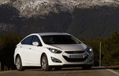
El coche que supone la continuación del legado dejado por el Hyundai Sonata ha adoptado una nueva denominación para semejarla a sus hermanos de gama. El Hyundai i40 ha llegado al segmento D para dar guerra. Nueva estética, equipamiento y un precio asequible es la baza de Hyundai para este segmento.
El Hyundai i40 se vende en carrocería sedán y carrocería familiar (CW – Crosswagon) abarcando pues las dos elecciones más comunes en coches de este tamaño. En cuanto a motorizaciones también hay para elegir, diesel con varias potencias y un motor gasolina de inyección directa.
En cuanto a equipamiento, destaca por su cantidad y su variedad, con opciones a la altura de coches mucho más caros de las denominadas “marcas premium”. Estos equipamientos vienen como en los fabricantes asiáticos en forma de paquetes de opciones que van adicionándose al conjunto a medida que se va subiendo por la escalera de acabados. Vamos a conocerlo un poco más.
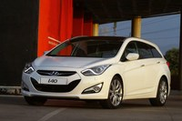
Exterior del Hyundai i40
Sus formas se inspiran en el prototipo Genus de Hyundai y son las que a la postre dominan la gama del fabricante coreano. Rejilla pseudohexagonal y un equilibrio bien conseguido entre líneas afiladas y líneas curvas, entre las que destacan por su vistosidad las tiras curvas con LED que ejercen de luces diurnas y se hallan en el interior de los faros, que opcionalmente pueden ser de Xenón y direccionables.
La estética del Hyundai i40 tiene regusto europeo porque el equipo de diseño de Hyundai en el viejo continente ha estado involucrado en el diseño del i40. En comparación con su predecesor, el Hyundai Sonata, el i40 es ligeramente más corto (mide 4.770 mm, 30 mm menos largo), más estrecho (1.815 mm, 17 mm menos ancho) y más bajo (1.470, 5 mm menos alto). Las dimensiones de la versión familiar o CW son idénticas a las del sedán.
La batalla en cambio se ha alargado 40 mm hasta los 2.770 mm respecto al Sonata, lo que tras la redistribución del espacio disponible por la nueva carrocería más torneada se traduce en un aumento del espacio disponible para los ocupantes delanteros hasta superar al Ford Mondeo, Opel Insignia, Renault Laguna y Toyota Avensis, las vacas sagradas del segmento.
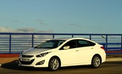
El espacio trasero también es destacable a lo que se unen asientos reclinables traseros, que dejan sin embargo libres 505 litros de capacidad para el maletero, un volumen por encima del Opel Insignia y Renault Laguna, pero por debajo del Toyota Avensis, Volkswagen Passat y Ford Mondeo. La versión familiar cuenta con un maletero de 553 litros que llegan a los 1.723 litros con los asientos traseros abatidos.
La carrocería del i40 ha sido diseñada de cara a reducir el coeficiente aerodinámico a 0,28 para el sedán y 0,29 para la versión familiar (CW – Crosswagon). Un diseño más aerodinámico para rascar lo posible al consumo, muy en la línea actual.
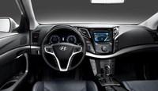
Interior del Hyundai i40
Interior sobrio estéticamente pero tecnológicamente cargado de detalles dignos de coches más caros, así es el Hyundai i40. Entre el equipamiento del i40 destacan opciones como el asistente de cambio de carril, el Bluetooth con reconocimiento de voz, el navegador, la cámara de trasera para asistencia al aparcamiento y el equipo de sonido Infinity.
El freno de mano es eléctrico de serie. Los asientos delanteros pueden llevar calefacción y ventilación y adicionalmente se puede montar un sistema automático de desempañado que detecta la condensación en el parabrisas y activa automáticamente la calefacción para desempañar.
El panel de instrumentos cuenta con una pantalla de LCD que ofrece información a todo color al conductor. El modelo básico del i40 incluye toda el equipamiento de seguridad de serie, lo que significa airbags de conductor y pasajero, laterales delanteros y traseros, de cortina, junto con el airbag de rodilla del conductor, reposacabezas activos y ESP.
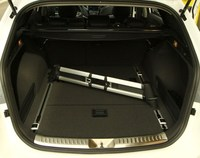
Gama y equipamiento del Hyundai i40
El acabado básico es el City, que incluye toda la seguridad de serie, aire acondicionado, indicador de marcha recomendada y alternador con gestión electrónica. También es de serie la Radio con CD, MP3 con conector USB y AUX, el indicador de marcha recomendada, los intermitentes de una pulsación y los retrovisores eléctricos calefactables. También el sistema de stop&start junto con la rejilla activa en las versiones diesel.
El acabado Bluedrive añade al City llantas de aleación de 16 pulgadas con neumáticos de baja resistencia a la rodadura, inserciones cromadas en el interior, climatizador, Bluetooth, control de crucero con mandos en el volante, sensor de luces y antiempañado, volante y palanca de cambios en cuero, junto con el retrovisor interior electrocromático.
El acabado Tecno añade adicionalmente al Bluedrive los sensores de parking delanteros y traseros, el sistema de alerta de cambio de carril, los retrovisores plegables automáticamente y con luz de bienvenida, el cuadro de mandos Super Visión. Este acabado solo se puede elegir con el motor 1.7 CRDi de 136 CV.
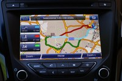
El acabado Style es el tope de gama y lleva por ello llantas de aleación de 17 pulgadas, asientos de cuero calefactables, ventilados, con ajustes eléctricos y memoria, llave inteligente para acceso y arranque con boton y faros de xenón adaptativos y direccionales.
Los acabados Bluedrive pueden montarse junto al acabado City y al Tecno, sumándose los equipamientos respectivos. De esta manera se establecen una buena cantidad de variantes para abarcar todos los gustos tecnológicos y lo más importante para los que compren un i40, todos los bolsillos.
Existen opciones para algunos acabados como la cámara trasera para ayuda al aparcamiento, el sistema de aparcamiento inteligente que aparcará o desaparcará el coche automáticamente o el sistema de cambio de carril. También existe la opción de montar un portón de apertura eléctrica y el techo solar panorámico en tres piezas en la versión familiar.
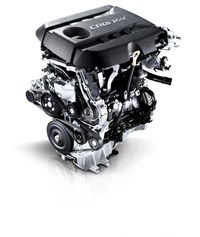
Motores, cajas de cambio y tren de rodaje
Los motores disponibles en España son tres, uno de gasolina y dos diesel, siendo estos últimos dos versiones del mismo motor denominado por Hyundai U-II. Los tres motores son de diseño actual y por lo tanto tienen buenas prestaciones con consumos contenidos, abarcando potencias entre los 115 CV y los 136 CV.
El motor gasolina es el moderno 1.6 GDi Gamma con inyección directa que entrega 135 CV y 165 Nm de par. Este motor consigue un consumo combinado de 6,4 l/100 km. Este motor es el que forma parte de la entrada de gama del Hyundai i40 asociado al acabado City.
Los motores diesel son motores 1.7 CRDi U-II con una versión de 115 CV solo asociable a los acabados Bluedrive y otra con 136 CV. Los consumos son muy reducidos, quedándose en el caso de la versión de 115 CV con su respectivo acabado Bluedrive en 4,3 l/100 km en mixto.
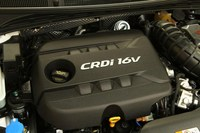
La versión de 136 CV consume 5,1 l/100 km, que se reducen a 4,5 l/100 km en los acabados Bluedrive y en las versiones con carrocería familiar. Este consumo sube a los 6,0 l/100 km en las versiones con cambio automático. Ninguno de los acabados Bluedrive paga impuesto de matriculación y el resto pagan solo un 4,75%.
La versión familiar solo puede montar el 1.7 CRDi de 136 CV, aunque a nivel europeo se pueden elegir hasta cuatro motores para el Hyundai i40 CW, los tres ya mencionados y un motor adicional de gasolina, que obviamente no se vende en España. El rechazado en el mercado español es el Nu de 2.0 litros e inyección directa que entrega 177 CV de potencia y un par de 213 Nm.
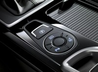
En cuanto a las cajas de cambio, las manuales son de seis velocidades con embrague monodisco en seco. Las automáticas son de seis velocidades y nuevas en Hyundai, tienen varios modos seleccionables y levas en el volante. Sus datos de consumo ya nos han adelantado que se trata de cajas con convertidor de par, aunque la caja de cambios en su conjunto pesa muy poco, tan solo 20 kg más que la manual.
Para reducir el consumo en la medida de lo posible, Hyundai incorpora en sus versiones automáticas el Active Eco System que nos indica si estamos haciendo conducción económica y además incorpora el control de crucero. Además cuando paramos varios segundos, por ejemplo en un semáforo, la caja de cambios pasa de la D a la N de manera que se ahorra ligeramente combustible cuando se para el coche.
Precios del Hyundai i40
Hyundai i40 (Sedán)
- Hyundai i40 1.6 GDi 135CV City: 21.190 euros
- Hyundai i40 1.7 CRDi 115CV Bluedrive City: 22.190 euros
- Hyundai i40 1.6 GDi 135CV GLS: 23.390 euros
- Hyundai i40 1.7 CRDi 115CV GLS Bluedrive: 24.690 euros
- Hyundai i40 1.7 CRDi 136CV GLS Bluedrive Tecno: 26.690 euros
- Hyundai i40 1.7 CRDi 136CV GLS Bluedrive Tecno Automático: 28.690 euros
- Hyundai i40 1.7 CRDi 136CV GLS Style: 30.690 euros
- Hyundai i40 1.7 CRDi 136CV GLS Bluedrive Navegador: 31.940 euros
- Hyundai i40 1.7 CRDi 136CV GLS Bluedrive Automático: 31.940 euros
- Hyundai i40 1.7 CRDi 136CV GLS Bluedrive Automático con navegador: 33.190 euros
Hyundai i40 CW (Familiar)
- Hyundai i40 CW 1.7 CRDi 136CV Bluedrive: 26.490 euros
- Hyundai i40 CW 1.7 CRDi 136CV Bluedrive Tecno: 28.490 euros
- Hyundai i40 CW 1.7 CRDi 136CV Style: 35.290 euros
- Hyundai i40 CW 1.7 CRDi 136CV Style Automático con navegador: 37.790 euros
Galerías de fotos
Debido al elevado número de imágenes que contienen, estas galerías las enlazamos aparte:
- Galería del Hyundai i40 sedán
- Galería del Hyundai i40 CW

Wed, 07 Mar 2012 08:00:00 GMT
McLaren MP4-12C, prueba (conducción y dinámica II)
McLaren MP4-12C, prueba (conducción y dinámica II)
Ayer os dejaba con la segunda parte de la prueba del McLaren MP4-12C mientras a nosotros nos caía una nevada de auténtico escándalo en la carretera de Ronda. Contra esas condiciones ambientales poco se puede hacer. Pero no me había pegado más de 600 kilómetros desde Madrid para que la lluvia y la nieve enfriasen (nunca mejor dicho) el que debería ser uno de los días más felices de mi vida, el día en el que me puse a los mandos del coche con el que llevaba soñando más de un año. Tras rodar unos cuantos kilómetros con el McLaren MP4-12C en su modo más manso, el Winter, decidí volver al modo normal viendo que los copos de nieve apenas cuajaban sobre la carretera. Había que echarle coraje, confiar en mi conducción y en la bendita electrónica para tratar de disfrutar. Evidentemente, una carretera nacional rápida de curvas amplias y con buen asfalto no es el mejor sitio para disfrutar de los 600 caballos con el asfalto congelado por la nieve. Un error se puede pagar muy caro, así que decido tomar un desvío para buscar una carretera más ratonera, con curvas más cerradas y en la que la velocidad media fuese inferior. Después de repostar 40 euros de Sin Plomo de 98 octanos y quedarme sorprendido cuando el dependiente de la gasolinera me dice “Ese McLaren ya había pasado por aquí. ¿Cuantos caballos tiene?”, éste me mira con cara de loco cuando le pregunto si la carretera del cruce anterior lleva a una zona de curvas. Me dice que si, pero que para disfrutar de ese coche me vaya mejor a Ascari, que está a pocos kilómetros. Le sonrio dejándole caer que lo sabía, pero por desgracia estaba reservado para un evento, ya lo habíamos preguntado. Vuelvo hacia el coche, que esperaba imponente con sus dos características salidas de escape escondidas en la parrilla trasera. Desde la carretera nacional tomo el desvío que nos debería llevar a la diversión. La carretera cambia por completo a medida que avanza por la ladera de la montaña, y pronto veo que nos esperan muchas curvas unidas por tramos rectos muy cortos. Éstos se hacen si cabe más cortos si le pisas al McLaren MP4-12C. El motor V8 es muy progresivo en conducción tranquila, pero si pisas el pedal derecho con fuerza, el turbo se hace notar por todos lados y hay que subir de marchas de forma rápida. Uno de los últimos coches turbo que había probado, y en el que el turbo se hacía notar de especial manera fue el Ford Focus RS y no pude evitar acordarme de él. Por desgracia todavía era muy jóven para conducir en la época del Renault 5 GT Turbo, pero estoy seguro de que también me hubiese acordado del mítico “soplillo”. El turbo sopla de forma más que evidente en algunos momentos, y eso se nota tanto por el sonido como por la fuerza con la que el coche comienza a empujar hacia delante. El sonido es ronco, grave e intimida. Pero en ningún momento llega a ser molesto en el habitáculo. Las sensaciones invitan una y otra vez a volver a pisar con contundencia el acelerador desafiando a la climatología. Otra característica del MP4-12C, es que las marchas hay que meterlas de verdad. Frente a lo que ocurre en otros coches con levas en el volante en los que basta con acariciarlas para que la marcha entre, en este en cambio hay que pulsarla con fuerza. Así evitas equivocaciones con las marchas. Uno de los puntos que más me gustó del McLaren MP4-12C para tratarse de un auténtico superdeportivo, es que la superficie acristalada es muy grande y te permite ver con claridad tanto el perfil del coche como todo lo que te rodea. Esto es algo que se agradece en una carretera de curvas como ésta. La amplia visibilidad me permite trazar las curvas de forma más fina. En los siguientes 15 kilómetros solo nos cruzamos con un coche, así que os podéis imaginar cuanto disfrutarmos. Durante ese tramo de curvas más pronunciadas que en la carretera nacional anterior, pude reafirmar que hay tres aspectos que destacan especialmente al conducir el McLaren: agilidad en curvas, facilidad de conducción y confort de marcha. Si a esto unimos un motor que corre como un auténtico demonio, tenemos un cóctel perfecto. Y es que con el coche configurado en el modo de chasis “normal” y el motor también en el modo “normal”, el confort de marcha es tan alto que puedes llegar a pensar que estás a los mandos de una berlina o un compacto normal y corriente. También ayuda un chasis muy bien puesto a punto, que hace que los miedos que habitualmente se tienen cuando uno se pone a los mandos de un coche superdeportivo desaparezcan por completo al poco tiempo de rodar con él. El MonoCell de fibra de carbono solo pesa 75 kilos, es una auténtica obra de arte y se nota al conducirlo. A los pocos kilómetros pasamos por una pequeña población después de un buen maratón de curvas de todo tipo. Apenas llovía ya, así que paramos en esa tranquila población para hacer las fotos estáticas del coche en la zona peatonal pegada a un río. Carácter sin humor británico Mientras hacían las fotos estáticas del coche, volví a admirar cada línea de su carrocería con detenimiento. El McLaren MP4-12C es un coche con carácter, un coche capaz de enamorar tanto a los amantes de los deportivos de aspecto clásico como a los que persiguen lo vanguardista e incluso extravagante. Me había demostrado un par de veces, que a pesar de llevarlo en el modo más tranquilo y sosegado de chasis y de motor, también es un coche capaz de ponerte en apuros con lluvia y frío como era el caso. Las gotas que caían del cielo comenzaban a calmarse, parecía que el día de película de terror estaba llegando a su fin. Y yo no podía resistirme más a volver a ponerme al volante del coche, para seguir experimentando sus sensaciones. Mi compañero Javier Álvarez, que hacía las labores de fotógrafo me dijo que ya tenía material suficiente en parado, así que sin dudarlo ni un minuto volví al coche y puse en marcha el motor V8. El estruendo pareció romper por completo la calma de aquella mañana de viernes en ese pequeño pueblo, e incluso pareció espantar parte de las nubes. Y eso que no llevaba los escapes deportivos opcionales. El clima nos daba un respiro, así que no había tiempo que perder. Salimos del pueblo en busca de una carretera de curvas con un mirador que nos había indicado un vecino, pero el mirador nunca apareció ante nosotros. Tal vez nos lo pasamos de largo disfrutando de los 600 caballos de potencia, que en el modo del chasis “sport” y con el motor también en configuración “sport” hacían que tuviese la sensación de estar al volante de un coche completamente distinto. Las suspensiones cómodas y confortables que nos habían acompañado durante la mañana, dejan paso en este modo intermedio a unas más duras y rígidas, que invitan a aumentar el ritmo de forma constante a medida que nos acercamos a cada curva. La respuesta del motor por su parte es mucho más contundente, más directa y más adictiva. Bajas dos marchas pulsando con fuerza la leva izquierda del volante, insinuas con tu pie derecho que quieres comenzar a volar y sales disparado hacia delante como una exhalación. Llevando el coche en esa configuración me divertí mucho, la trasera se insinuaba, bailaba sobre el asfalto húmedo pero con un nivel de control claramente superior al de la mañana. Pronto, a los pocos kilómetros, regresamos a la carretera nacional por la que subíamos antes hacia Ronda. Estábamos en un alto y de lejos se veía un poco de sol sobre la costa, así que bajamos tranquilamente hacia San Pedro de Alcántara asimilando las sensaciones que el superdeportivo nos había transmitido. Se que la mayoría de vosotros pensaréis que está siendo una prueba “descafeinada” porque no he podido exprimir al máximo el McLaren MP4-12C, no he podido ponerlo al límite ni sacar si quiera un 70% de su potencial. Pero también es cierto que con esas escasas cuatro horas que llevaba al volante del superdeportivo británico, ya sabía perfectamente de lo que era capaz. Poner al límite un coche así es algo que solo se puede hacer en circuito, en carretera debería ser ilegal. Los interruptores que permiten configurar el Handling (chasis) y Powertrain solo habían estado en modo N (normal) y S (sport), mientras que el modo T (track) se quedaba reservado para otra ocasión. La climatología estaba en contra nuestro, pero hay que buscar el punto positivo. Ahora tenemos una disculpa para tratar de volver a reencontrarnos con el McLaren MP4-12C. Continuará... En Motorpasión | McLaren MP4-12C, prueba (exterior e interior, conducción y dinámica I)
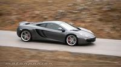
Ayer os dejaba con la segunda parte de la prueba del McLaren MP4-12C mientras a nosotros nos caía una nevada de auténtico escándalo en la carretera de Ronda. Contra esas condiciones ambientales poco se puede hacer.
Pero no me había pegado más de 600 kilómetros desde Madrid para que la lluvia y la nieve enfriasen (nunca mejor dicho) el que debería ser uno de los días más felices de mi vida, el día en el que me puse a los mandos del coche con el que llevaba soñando más de un año.
Tras rodar unos cuantos kilómetros con el McLaren MP4-12C en su modo más manso, el Winter, decidí volver al modo normal viendo que los copos de nieve apenas cuajaban sobre la carretera. Había que echarle coraje, confiar en mi conducción y en la bendita electrónica para tratar de disfrutar.
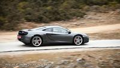
Evidentemente, una carretera nacional rápida de curvas amplias y con buen asfalto no es el mejor sitio para disfrutar de los 600 caballos con el asfalto congelado por la nieve. Un error se puede pagar muy caro, así que decido tomar un desvío para buscar una carretera más ratonera, con curvas más cerradas y en la que la velocidad media fuese inferior.
Después de repostar 40 euros de Sin Plomo de 98 octanos y quedarme sorprendido cuando el dependiente de la gasolinera me dice “Ese McLaren ya había pasado por aquí. ¿Cuantos caballos tiene?”, éste me mira con cara de loco cuando le pregunto si la carretera del cruce anterior lleva a una zona de curvas.
Me dice que si, pero que para disfrutar de ese coche me vaya mejor a Ascari, que está a pocos kilómetros. Le sonrio dejándole caer que lo sabía, pero por desgracia estaba reservado para un evento, ya lo habíamos preguntado. Vuelvo hacia el coche, que esperaba imponente con sus dos características salidas de escape escondidas en la parrilla trasera.
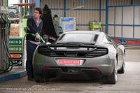
Desde la carretera nacional tomo el desvío que nos debería llevar a la diversión. La carretera cambia por completo a medida que avanza por la ladera de la montaña, y pronto veo que nos esperan muchas curvas unidas por tramos rectos muy cortos.
Éstos se hacen si cabe más cortos si le pisas al McLaren MP4-12C. El motor V8 es muy progresivo en conducción tranquila, pero si pisas el pedal derecho con fuerza, el turbo se hace notar por todos lados y hay que subir de marchas de forma rápida.
Uno de los últimos coches turbo que había probado, y en el que el turbo se hacía notar de especial manera fue el Ford Focus RS y no pude evitar acordarme de él. Por desgracia todavía era muy jóven para conducir en la época del Renault 5 GT Turbo, pero estoy seguro de que también me hubiese acordado del mítico “soplillo”.
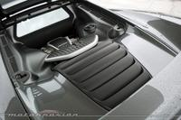
El turbo sopla de forma más que evidente en algunos momentos, y eso se nota tanto por el sonido como por la fuerza con la que el coche comienza a empujar hacia delante. El sonido es ronco, grave e intimida. Pero en ningún momento llega a ser molesto en el habitáculo. Las sensaciones invitan una y otra vez a volver a pisar con contundencia el acelerador desafiando a la climatología.
Otra característica del MP4-12C, es que las marchas hay que meterlas de verdad. Frente a lo que ocurre en otros coches con levas en el volante en los que basta con acariciarlas para que la marcha entre, en este en cambio hay que pulsarla con fuerza. Así evitas equivocaciones con las marchas.
Uno de los puntos que más me gustó del McLaren MP4-12C para tratarse de un auténtico superdeportivo, es que la superficie acristalada es muy grande y te permite ver con claridad tanto el perfil del coche como todo lo que te rodea.
Esto es algo que se agradece en una carretera de curvas como ésta. La amplia visibilidad me permite trazar las curvas de forma más fina. En los siguientes 15 kilómetros solo nos cruzamos con un coche, así que os podéis imaginar cuanto disfrutarmos.
Durante ese tramo de curvas más pronunciadas que en la carretera nacional anterior, pude reafirmar que hay tres aspectos que destacan especialmente al conducir el McLaren: agilidad en curvas, facilidad de conducción y confort de marcha. Si a esto unimos un motor que corre como un auténtico demonio, tenemos un cóctel perfecto.
Y es que con el coche configurado en el modo de chasis “normal” y el motor también en el modo “normal”, el confort de marcha es tan alto que puedes llegar a pensar que estás a los mandos de una berlina o un compacto normal y corriente.
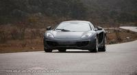
También ayuda un chasis muy bien puesto a punto, que hace que los miedos que habitualmente se tienen cuando uno se pone a los mandos de un coche superdeportivo desaparezcan por completo al poco tiempo de rodar con él. El MonoCell de fibra de carbono solo pesa 75 kilos, es una auténtica obra de arte y se nota al conducirlo.
A los pocos kilómetros pasamos por una pequeña población después de un buen maratón de curvas de todo tipo. Apenas llovía ya, así que paramos en esa tranquila población para hacer las fotos estáticas del coche en la zona peatonal pegada a un río.
Carácter sin humor británico
Mientras hacían las fotos estáticas del coche, volví a admirar cada línea de su carrocería con detenimiento. El McLaren MP4-12C es un coche con carácter, un coche capaz de enamorar tanto a los amantes de los deportivos de aspecto clásico como a los que persiguen lo vanguardista e incluso extravagante.
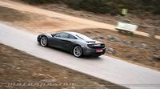
Me había demostrado un par de veces, que a pesar de llevarlo en el modo más tranquilo y sosegado de chasis y de motor, también es un coche capaz de ponerte en apuros con lluvia y frío como era el caso.
Las gotas que caían del cielo comenzaban a calmarse, parecía que el día de película de terror estaba llegando a su fin. Y yo no podía resistirme más a volver a ponerme al volante del coche, para seguir experimentando sus sensaciones.
Mi compañero Javier Álvarez, que hacía las labores de fotógrafo me dijo que ya tenía material suficiente en parado, así que sin dudarlo ni un minuto volví al coche y puse en marcha el motor V8. El estruendo pareció romper por completo la calma de aquella mañana de viernes en ese pequeño pueblo, e incluso pareció espantar parte de las nubes. Y eso que no llevaba los escapes deportivos opcionales.
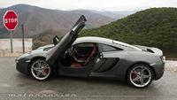
El clima nos daba un respiro, así que no había tiempo que perder. Salimos del pueblo en busca de una carretera de curvas con un mirador que nos había indicado un vecino, pero el mirador nunca apareció ante nosotros.
Tal vez nos lo pasamos de largo disfrutando de los 600 caballos de potencia, que en el modo del chasis “sport” y con el motor también en configuración “sport” hacían que tuviese la sensación de estar al volante de un coche completamente distinto.
Las suspensiones cómodas y confortables que nos habían acompañado durante la mañana, dejan paso en este modo intermedio a unas más duras y rígidas, que invitan a aumentar el ritmo de forma constante a medida que nos acercamos a cada curva.
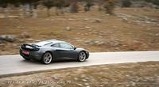
La respuesta del motor por su parte es mucho más contundente, más directa y más adictiva. Bajas dos marchas pulsando con fuerza la leva izquierda del volante, insinuas con tu pie derecho que quieres comenzar a volar y sales disparado hacia delante como una exhalación.
Llevando el coche en esa configuración me divertí mucho, la trasera se insinuaba, bailaba sobre el asfalto húmedo pero con un nivel de control claramente superior al de la mañana.
Pronto, a los pocos kilómetros, regresamos a la carretera nacional por la que subíamos antes hacia Ronda. Estábamos en un alto y de lejos se veía un poco de sol sobre la costa, así que bajamos tranquilamente hacia San Pedro de Alcántara asimilando las sensaciones que el superdeportivo nos había transmitido.
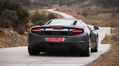
Se que la mayoría de vosotros pensaréis que está siendo una prueba “descafeinada” porque no he podido exprimir al máximo el McLaren MP4-12C, no he podido ponerlo al límite ni sacar si quiera un 70% de su potencial.
Pero también es cierto que con esas escasas cuatro horas que llevaba al volante del superdeportivo británico, ya sabía perfectamente de lo que era capaz. Poner al límite un coche así es algo que solo se puede hacer en circuito, en carretera debería ser ilegal.
Los interruptores que permiten configurar el Handling (chasis) y Powertrain solo habían estado en modo N (normal) y S (sport), mientras que el modo T (track) se quedaba reservado para otra ocasión. La climatología estaba en contra nuestro, pero hay que buscar el punto positivo. Ahora tenemos una disculpa para tratar de volver a reencontrarnos con el McLaren MP4-12C.
Continuará...
En Motorpasión | McLaren MP4-12C, prueba (exterior e interior, conducción y dinámica I)
Tue, 06 Mar 2012 22:00:00 GMT
En EEUU se roba cada vez más gasolina debido al alza en los surtidores
En EEUU se roba cada vez más gasolina debido al alza en los surtidores
El otro día hablábamos de que en EEUU el precio de la gasolina está subiendo mucho. Aunque a escala nacional tienen el galón (3,7 litros) a 3,74 dólares, hay zonas donde se han superado los 5 dólares (~1 euro/litro), como en Florida u Orlando. Eso está provocando más robos y más sofisticación en los mismos. Además de los sinpa (repostar y salir corriendo), las autoridades están preocupadas por las gasolineras clandestinas móviles. Es decir, usar un gran monovolumen, equiparlo con depósitos y mecanismos de bombeo, robar cientos de litros de las gasolineras y luego revenderlos. Obviamente, todo esto es sin elementales medidas de seguridad. Transportar gasolina no es como llevar garrafas de agua, o de aceite. De hecho, está prohibido su transporte si no es en garrafas homologadas, ya que el combustible puede evaporarse fácilmente y se corre un elevado riesgo de explosión. Hablamos de bombas que van por la carretera, en el doble y más literal de los sentidos. No hablamos de gente que no tiene para dar de beber a sus V8, sino a gente de bajos recursos de los estados del sur que se ven obligados a comprar gasolina clandestina, o a robarla ellos mismos. Una camioneta que lleva unos 1.700 litros de combustible encima es un peligro público, y un día habrá que lamentarlo. No es que el robo de gasolina sea una novedad, el vídeo que hay tras el salto data de 2008 (cuanto también subió mucho) y ahí se ve otro método de robo de combustible, la manipulación de los surtidores. Algunas gasolineras empiezan a tomar medidas, como limitar a 50 dólares el suministro de los surtidores prepago, cobrar fianzas en las tarjetas de 100 dólares, etc. La policía de Florida está en alerta ante estas nuevas formas de robo de gasolina, porque cuanto más sube, más rentable resulta robarla. Para las gasolineras es un problema, cada sinpa anula todos los beneficios de una semana de venta. No hablemos ya de que desaparezcan cientos de litros. Vídeo | Youtube Fuente | ABC, Tampa Bay, El Mundo, my Fox En Motorpasión | La gasolina sube en Estados Unidos como la espuma

El otro día hablábamos de que en EEUU el precio de la gasolina está subiendo mucho. Aunque a escala nacional tienen el galón (3,7 litros) a 3,74 dólares, hay zonas donde se han superado los 5 dólares (~1 euro/litro), como en Florida u Orlando. Eso está provocando más robos y más sofisticación en los mismos.
Además de los sinpa (repostar y salir corriendo), las autoridades están preocupadas por las gasolineras clandestinas móviles. Es decir, usar un gran monovolumen, equiparlo con depósitos y mecanismos de bombeo, robar cientos de litros de las gasolineras y luego revenderlos. Obviamente, todo esto es sin elementales medidas de seguridad.
Transportar gasolina no es como llevar garrafas de agua, o de aceite. De hecho, está prohibido su transporte si no es en garrafas homologadas, ya que el combustible puede evaporarse fácilmente y se corre un elevado riesgo de explosión. Hablamos de bombas que van por la carretera, en el doble y más literal de los sentidos.
No hablamos de gente que no tiene para dar de beber a sus V8, sino a gente de bajos recursos de los estados del sur que se ven obligados a comprar gasolina clandestina, o a robarla ellos mismos. Una camioneta que lleva unos 1.700 litros de combustible encima es un peligro público, y un día habrá que lamentarlo.
No es que el robo de gasolina sea una novedad, el vídeo que hay tras el salto data de 2008 (cuanto también subió mucho) y ahí se ve otro método de robo de combustible, la manipulación de los surtidores. Algunas gasolineras empiezan a tomar medidas, como limitar a 50 dólares el suministro de los surtidores prepago, cobrar fianzas en las tarjetas de 100 dólares, etc.
La policía de Florida está en alerta ante estas nuevas formas de robo de gasolina, porque cuanto más sube, más rentable resulta robarla. Para las gasolineras es un problema, cada sinpa anula todos los beneficios de una semana de venta. No hablemos ya de que desaparezcan cientos de litros.
Vídeo | Youtube
Fuente | ABC, Tampa Bay, El Mundo, my Fox
En Motorpasión | La gasolina sube en Estados Unidos como la espuma
Tue, 06 Mar 2012 17:00:00 GMT
Renault ZOE, un coche eléctrico de verdad desde 14.700 euros
Renault ZOE, un coche eléctrico de verdad desde 14.700 euros
Renault ha vuelto a hacerlo. Ya conocemos el aspecto definitivo del cuarto eléctrico que van a poner a la venta. Se llama Renault ZOE y va a poner patas arriba el mercado de los eléctricos en Europa. Las reservas han comenzado hoy mismo, aunque los coches tardarán en llegar un poco a sus propietarios. Primero, no es inaccesible en precio, hablamos de 14.700 euros, incluyendo las ayudas para coches eléctricos. Es más de lo que cuesta un utilitario de motor térmico, pero muchísimo menos de lo que piden Mitsubishi y PSA por los trillizos i MiEV, C-Zero e i0n. ¿Dónde está el truco? Como en los otros Renault ZE, las baterías se pagan aparte con alquiler. Segundo, tiene la mayor autonomía del mercado, 210 kilómetros según NEDC, y en ciclo mixto. Tercero, admite recargas rápidas, un mínimo de 30 minutos a 43 kW y 63 amperios. En casa, utilizando 3 kW y 16 amperios, se recarga en nueve horas como máximo. Su cargador “Camaleón” admite todas las posibilidades intermedias. Es un coche de verdad, con 88 CV de potencia. No es un cuadriciclo, y sus prestaciones son muy decentes, con una punta de 135 km/h . Al tener las baterías bajo el piso, no tiene tampoco contraprestaciones en habitabilidad, o en capacidad del maletero. El Think City ha quedado herido de muerte. Para poder ofrecerlo a casi la mitad que un coche eléctrico normal, las baterías no serían nuestras, sino de Renault, y hay que pagar una tarifa mensual de alquiler. En el caso del ZOE, hablamos de 79 euros al mes para el contrato de 12.500 km al año con una duración de tres años. Mide 4,09 metros de largo, dispone de cinco plazas (otra ventaja sobre el trío francojaponés) y 338 litros de maletero. Según voy leyendo sus cifras, le voy encontrando todavía menos pegas. Tiene 2,59 metros de batalla, tampoco hay problemas de habitabilidad. Si quieres seguir leyendo, no te pierdas el análisis de Motorpasión Futuro: En Motorpasión Futuro | Renault ZOE
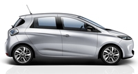
Renault ha vuelto a hacerlo. Ya conocemos el aspecto definitivo del cuarto eléctrico que van a poner a la venta. Se llama Renault ZOE y va a poner patas arriba el mercado de los eléctricos en Europa. Las reservas han comenzado hoy mismo, aunque los coches tardarán en llegar un poco a sus propietarios.
Primero, no es inaccesible en precio, hablamos de 14.700 euros, incluyendo las ayudas para coches eléctricos. Es más de lo que cuesta un utilitario de motor térmico, pero muchísimo menos de lo que piden Mitsubishi y PSA por los trillizos i MiEV, C-Zero e i0n. ¿Dónde está el truco? Como en los otros Renault ZE, las baterías se pagan aparte con alquiler.
Segundo, tiene la mayor autonomía del mercado, 210 kilómetros según NEDC, y en ciclo mixto. Tercero, admite recargas rápidas, un mínimo de 30 minutos a 43 kW y 63 amperios. En casa, utilizando 3 kW y 16 amperios, se recarga en nueve horas como máximo. Su cargador “Camaleón” admite todas las posibilidades intermedias.
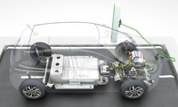
Es un coche de verdad, con 88 CV de potencia. No es un cuadriciclo, y sus prestaciones son muy decentes, con una punta de 135 km/h . Al tener las baterías bajo el piso, no tiene tampoco contraprestaciones en habitabilidad, o en capacidad del maletero. El Think City ha quedado herido de muerte.
Para poder ofrecerlo a casi la mitad que un coche eléctrico normal, las baterías no serían nuestras, sino de Renault, y hay que pagar una tarifa mensual de alquiler. En el caso del ZOE, hablamos de 79 euros al mes para el contrato de 12.500 km al año con una duración de tres años.
Mide 4,09 metros de largo, dispone de cinco plazas (otra ventaja sobre el trío francojaponés) y 338 litros de maletero. Según voy leyendo sus cifras, le voy encontrando todavía menos pegas. Tiene 2,59 metros de batalla, tampoco hay problemas de habitabilidad. Si quieres seguir leyendo, no te pierdas el análisis de Motorpasión Futuro:
En Motorpasión Futuro | Renault ZOE
Tue, 06 Mar 2012 16:00:00 GMT
SEAT en Ginebra: Toledo Concept, Ibiza y Mii
SEAT en Ginebra: Toledo Concept, Ibiza y Mii
Sin sorpresas en el frente, la marca española del Grupo VAG ha cumplido con el guión y no se ha salido ni una sola coma. El público ve por primera vez el Toledo Concept, a la vez que el SEAT Ibiza 2012, y la versión cinco puertas del Mii. Estos tres coches se van a vender a lo largo del año. Del Toledo vamos conociendo nuevos datos. No está basado en la nueva plataforma MQB, sino en la parte delantera del León y en la trasera del Ibiza. Por tamaño, no podemos catalogarlo en el segmento B (Córdoba), ya que raspa los 4,5 metros de largo y tiene una batalla de 2,6 metros, lo cual supera al actual Octavia de segmento C: 2,58 metros El anterior Córdoba, simplemente un Ibiza alargado, tenía una batalla de 2,48 metros, igual al Ibiza III. También era más corto que el Toledo, 4,28 metros de largo frente a 4,48 metros. El primer SEAT Toledo, de 1991, medía 4,32 metros de largo. Con 500 litros de maletero e interiores de más calidad que el Ibiza, indudablemente se va al segmento C. Pese a ello, no se espera muy caro, Expansión comenta que serán 14.000 euros en adelante en la versión de acceso. Todavía se desconocen las motorizaciones que tendrá, pero a priori se le podrían calzar todas las que utiliza actualmente el SEAT León, de 1.4 a 2 litros en gasolina, y de 1.6 a 2 litros en TDI. ¿Servirá este modelo para aumentar puestos de trabajo en la fábrica de Martorell? Pues, lamentablemente, no es así. La planta de Martorell tiene una capacidad máxima de 550.000 unidades al año, que se reparten entre el Ibiza (200.000), León (200.000), Audi Q3 (100.000) y Exeo (50.000). En 2018 SEAT quiere vender 800.000 coches al año. Al no haber espacio para fabricar más coches, la producción del Toledo se desvía a Mladá Boleslav (República Checa), donde está Škoda. Por su parte, en Bratislava (Eslovaquia) se producirá el SEAT Mii, junto a los otros dos trillizos, el Škoda Citigo y el Volkswagen Up! Una oportunidad industrial perdida No tengo claro quienes son los culpables de que estos dos modelos tan importantes, por su volumen, no se vayan a fabricar en España. Mano de obra tenemos, hay más de cinco millones de parados, pero además de cantidad, tenemos calidad. España es uno de los diez mayores productores de automóviles del mundo. Bien por SEAT, bien por la Generalitat, o bien por el Gobierno central, es una mala noticia para la industria española. Se tenían que haber fabricado aquí, se habrían generado miles de puestos de trabajo, y habría reforzado la imagen de SEAT de marca genuinamente española. Sin embargo, el Grupo Volkswagen prefiere que SEAT sea una marca satélite y más de uno pensará en que se favorece más a la franquicia checa. Además, SEAT tiene planes de expansión en China. Podemos adivinar dónde se fabricarán las unidades adicionales que necesitará dicho mercado. En España, al parecer, no. De momento, al vender pocos miles, pueden ir tirando de Martorell. A modo de anécdota, tanto el primer Toledo como el primer Ibiza se han vendido en China hasta hace poco tiempo. El primero se convirtió en el Chery Amulet o Windcloud y el segundo en los Nanjing Eagle y Soyat. Si quieren entrar en dicho mercado a lo bestia, Martorell no puede producir suficientes unidades. El Ibiza goza de buena salud en España, es el utilitario más vendido, y el segundo coche más exitoso de 2011 en general. Falta por ver la versión Cupra 2012, aún no presentada. Las entregas a clientes de las nuevas versiones están al caer, los precios arrancarán en 10.550 euros una vez apliquemos descuentos. En cuanto al Mii, es una de las grandes apuestas, el segmento A, que empieza a recuperarse. Como novedad, podrá tener un techo panorámico de cristal, que abarque casi todo el techo, de forma opcional. Faltan por presentarse las versiones automáticas, y la alimenta a gas natural (cuya comercialización en España no está confirmada). Vía | Expansión
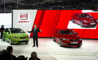
Sin sorpresas en el frente, la marca española del Grupo VAG ha cumplido con el guión y no se ha salido ni una sola coma. El público ve por primera vez el Toledo Concept, a la vez que el SEAT Ibiza 2012, y la versión cinco puertas del Mii. Estos tres coches se van a vender a lo largo del año.
Del Toledo vamos conociendo nuevos datos. No está basado en la nueva plataforma MQB, sino en la parte delantera del León y en la trasera del Ibiza. Por tamaño, no podemos catalogarlo en el segmento B (Córdoba), ya que raspa los 4,5 metros de largo y tiene una batalla de 2,6 metros, lo cual supera al actual Octavia de segmento C: 2,58 metros
El anterior Córdoba, simplemente un Ibiza alargado, tenía una batalla de 2,48 metros, igual al Ibiza III. También era más corto que el Toledo, 4,28 metros de largo frente a 4,48 metros. El primer SEAT Toledo, de 1991, medía 4,32 metros de largo. Con 500 litros de maletero e interiores de más calidad que el Ibiza, indudablemente se va al segmento C.
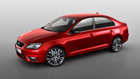
Pese a ello, no se espera muy caro, Expansión comenta que serán 14.000 euros en adelante en la versión de acceso. Todavía se desconocen las motorizaciones que tendrá, pero a priori se le podrían calzar todas las que utiliza actualmente el SEAT León, de 1.4 a 2 litros en gasolina, y de 1.6 a 2 litros en TDI.
¿Servirá este modelo para aumentar puestos de trabajo en la fábrica de Martorell? Pues, lamentablemente, no es así. La planta de Martorell tiene una capacidad máxima de 550.000 unidades al año, que se reparten entre el Ibiza (200.000), León (200.000), Audi Q3 (100.000) y Exeo (50.000). En 2018 SEAT quiere vender 800.000 coches al año.
Al no haber espacio para fabricar más coches, la producción del Toledo se desvía a Mladá Boleslav (República Checa), donde está Škoda. Por su parte, en Bratislava (Eslovaquia) se producirá el SEAT Mii, junto a los otros dos trillizos, el Škoda Citigo y el Volkswagen Up!
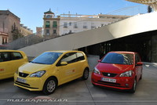
Una oportunidad industrial perdida
No tengo claro quienes son los culpables de que estos dos modelos tan importantes, por su volumen, no se vayan a fabricar en España. Mano de obra tenemos, hay más de cinco millones de parados, pero además de cantidad, tenemos calidad. España es uno de los diez mayores productores de automóviles del mundo.
Bien por SEAT, bien por la Generalitat, o bien por el Gobierno central, es una mala noticia para la industria española. Se tenían que haber fabricado aquí, se habrían generado miles de puestos de trabajo, y habría reforzado la imagen de SEAT de marca genuinamente española.
Sin embargo, el Grupo Volkswagen prefiere que SEAT sea una marca satélite y más de uno pensará en que se favorece más a la franquicia checa. Además, SEAT tiene planes de expansión en China. Podemos adivinar dónde se fabricarán las unidades adicionales que necesitará dicho mercado. En España, al parecer, no. De momento, al vender pocos miles, pueden ir tirando de Martorell.

A modo de anécdota, tanto el primer Toledo como el primer Ibiza se han vendido en China hasta hace poco tiempo. El primero se convirtió en el Chery Amulet o Windcloud y el segundo en los Nanjing Eagle y Soyat. Si quieren entrar en dicho mercado a lo bestia, Martorell no puede producir suficientes unidades.
El Ibiza goza de buena salud en España, es el utilitario más vendido, y el segundo coche más exitoso de 2011 en general. Falta por ver la versión Cupra 2012, aún no presentada. Las entregas a clientes de las nuevas versiones están al caer, los precios arrancarán en 10.550 euros una vez apliquemos descuentos.
En cuanto al Mii, es una de las grandes apuestas, el segmento A, que empieza a recuperarse. Como novedad, podrá tener un techo panorámico de cristal, que abarque casi todo el techo, de forma opcional. Faltan por presentarse las versiones automáticas, y la alimenta a gas natural (cuya comercialización en España no está confirmada).
Vía | Expansión
Tue, 06 Mar 2012 15:00:00 GMT
Volkswagen Polo BlueGT, un TSI de 140 CV y 4,7 litros cada 100 km
Volkswagen Polo BlueGT, un TSI de 140 CV y 4,7 litros cada 100 km
El Volkswagen Polo tenía hasta ahora un enorme salto entre sus dos motores de gasolina más potentes, el 1.2 TSI de 105 CV y el 1.4 TSI de 180 CV que únicamente monta la versión más deportiva, denominada GTI. Aunque muchos pensaban que el motor que vendría a completar ese espacio sería el 1.2 TSI de 122 CV, Volkswagen a presentado durante el Salón de Ginebra un nuevo motor TSI de 140 CV, que monta por el momento en exclusiva una nueva versión, denominada Volkswagen Polo BlueGT. Este motor pertenece a la nueva generación de motores que el grupo Volkswagen empezará a usar en los nuevos modelos que usen la Plataforma Modular Transversal MQB, aunque estará disponible en el utilitario antes de que sea renovado. Dicho esto empecemos a desgranar el nuevo motor. Se trata de un nuevo 1.4 TSI cuya principal novedad es que incluye el sistema de Gestión de Cilindros Activa ACT. Es el equivalente al Audi Cylinder on Demand que ya pudimos ver en otros modelos del grupo, y que Volkswagen presentó en septiembre del año pasado. Se trata de un sistema mediante el cual, en condiciones de carga baja y media, se desactivan el segundo y tercer cilindro, lo que según la marca supone un ahorro de 0,4 litros. En algunas condiciones, como circulando a 50 km/h en cuarta marcha el ahorro puede llegar hasta 0,7 litros cada 100 kilómetros. Además, el sistema analiza el patrón de comportamiento del conductor, y si por ejemplo circulamos de una manera más irregular o deportiva, desactiva el sistema para ofrecer en todo momento el máximo de potencia disponible. Este sistema se combina con otros fabricados con el mismo fin, como el sistema de parada y arranque automático del motor o el sistema de recuperación de energía de la frenada. Gracias a todo esto el Volkswagen Polo BlueGT tiene un consumo medio de 4,7 litros cada 100 kilómetros (4,5 si optamos por la caja de cambios automática DSG). Esto equivale a 108 y 105 gramos de dióxido de carbono respectivamente. A pesar de este buen dato de consumo, el Volkswagen Polo BlueGT acelera hasta los 100 km/h en 7,9 segundos, un segundo más lento por tanto que la versión GTI (con cambio automático quizá rebaje esa cifra). Por otro lado, como ya habréis visto en la fotografía, esta versión incluye algunas modificaciones estéticas que afectan tanto al exterior como al interior. Por fuera, este Volkswagen Polo cuenta con una rejilla delantera deportiva, un pequeño alerón, taloneras específicas, un difusor trasero y llantas de 17 pulgadas. Por dentro también nos encontramos con algunas mejoras, como asientos deportivos, tapizado del techo en negro, instrumentos importados del Volkswagen Polo GTI, y una pantalla de información más completa donde se advierte al conductor de la entrada en funcionamiento del sistema ACT. En Motorpasión | Nuevo motor TSI de cuatro cilindros con cilindros desconectables , El Volkswagen Polo R-Line llega a España a medias
.jpg)
El Volkswagen Polo tenía hasta ahora un enorme salto entre sus dos motores de gasolina más potentes, el 1.2 TSI de 105 CV y el 1.4 TSI de 180 CV que únicamente monta la versión más deportiva, denominada GTI.
Aunque muchos pensaban que el motor que vendría a completar ese espacio sería el 1.2 TSI de 122 CV, Volkswagen a presentado durante el Salón de Ginebra un nuevo motor TSI de 140 CV, que monta por el momento en exclusiva una nueva versión, denominada Volkswagen Polo BlueGT.
Este motor pertenece a la nueva generación de motores que el grupo Volkswagen empezará a usar en los nuevos modelos que usen la Plataforma Modular Transversal MQB, aunque estará disponible en el utilitario antes de que sea renovado.
.jpg)
Dicho esto empecemos a desgranar el nuevo motor. Se trata de un nuevo 1.4 TSI cuya principal novedad es que incluye el sistema de Gestión de Cilindros Activa ACT. Es el equivalente al Audi Cylinder on Demand que ya pudimos ver en otros modelos del grupo, y que Volkswagen presentó en septiembre del año pasado.
Se trata de un sistema mediante el cual, en condiciones de carga baja y media, se desactivan el segundo y tercer cilindro, lo que según la marca supone un ahorro de 0,4 litros. En algunas condiciones, como circulando a 50 km/h en cuarta marcha el ahorro puede llegar hasta 0,7 litros cada 100 kilómetros.
Además, el sistema analiza el patrón de comportamiento del conductor, y si por ejemplo circulamos de una manera más irregular o deportiva, desactiva el sistema para ofrecer en todo momento el máximo de potencia disponible.
.jpg)
Este sistema se combina con otros fabricados con el mismo fin, como el sistema de parada y arranque automático del motor o el sistema de recuperación de energía de la frenada. Gracias a todo esto el Volkswagen Polo BlueGT tiene un consumo medio de 4,7 litros cada 100 kilómetros (4,5 si optamos por la caja de cambios automática DSG).
Esto equivale a 108 y 105 gramos de dióxido de carbono respectivamente. A pesar de este buen dato de consumo, el Volkswagen Polo BlueGT acelera hasta los 100 km/h en 7,9 segundos, un segundo más lento por tanto que la versión GTI (con cambio automático quizá rebaje esa cifra).
Por otro lado, como ya habréis visto en la fotografía, esta versión incluye algunas modificaciones estéticas que afectan tanto al exterior como al interior. Por fuera, este Volkswagen Polo cuenta con una rejilla delantera deportiva, un pequeño alerón, taloneras específicas, un difusor trasero y llantas de 17 pulgadas.
Por dentro también nos encontramos con algunas mejoras, como asientos deportivos, tapizado del techo en negro, instrumentos importados del Volkswagen Polo GTI, y una pantalla de información más completa donde se advierte al conductor de la entrada en funcionamiento del sistema ACT.
.jpg)
En Motorpasión | Nuevo motor TSI de cuatro cilindros con cilindros desconectables , El Volkswagen Polo R-Line llega a España a medias
Tue, 06 Mar 2012 12:30:00 GMT
Chevrolet en Ginebra: Cruze SW y dos prototipos chulos
Chevrolet en Ginebra: Cruze SW y dos prototipos chulos
La novedad mundial que trae la marca global es el Chevrolet Cruze SW, la tercera carrocería de la gama Cruze. Se venderá en cuestión de meses, y tendrá cinco motorizaciones para elegir, en gasolina y en diesel. También presenta algunas evoluciones que no tienen las versiones sedán y compacta todavía. Estrena nuevo frontal, con nuevas ópticas y luces antinieblas, además de luces diurnas. Aumentan las posibilidades de personalización con nuevas llantas, 10 colores exteriores y más tejidos para los asientos. La consola central recibe algunos refinamientos y el nuevo sistema telemático y multimedia Chevrolet MyLink. Esto último implica que recibe Bluetooth y Bluetooth Audio, pantalla táctil de 7”, conexión USB, compatibilidad con smartphones, navegación, etc. Además, recibe el acceso inteligente “manos libres”, basta con llevar las llaves en el bolsillo, y para arrancar el coche, bastará con pulsar el botón Start/Stop. En cuanto a motores, estarán los actuales 1.6 (124 CV) y 1.8 (141 CV) con admisión atmosférica en gasolina. Serán complementados por el 1.4 Turbo (140 CV), al igual que en EEUU, donde ambas posibilidades se pueden elegir. El 1.4 Turbo debería reducir los consumos, no solo por lo evidente, también por el Stop&Start. En cuanto a los Diesel, además del 2.0 D (160 CV), se incorpora un 1.7 D (130 CV) para hacer el modelo más accesible, y porque no todo el mundo necesita tanto caballo. El 1.7 escapa al impuesto de matriculación, gasta 4,5 l/100 km, no es el más austero del segmento pero cumple a la perfección. Ambos motores Diesel tendrán Stop&Start. Por otro lado, el Cruze SW tendrá 500 litros de maletero en configuración normal, y 1.500 litros abatiendo la segunda fila de asientos. Las barras de carga del techo serán de serie en todos los acabados. No conocemos sus precios, pero seguirán siendo de derribo. Chevrolet Code 130R, Tru 140S y Malibu Para complementar la asistencia al salón suizo, han traído los Code 130R (unidad roja) y Tru 140S (unidad gris), dos propuestas de jóvenes diseñadores que no se habían visto antes en Europa. Son declaraciones de intenciones para coches pintones para dentro de unos años, al gusto del consumidor joven. En el primer caso, nos hallamos ante un coche de proporciones poco vistas en el viejo continente, un coupé de tres puertas con cuatro plazas, pero este es de tracción delantera. Está basado en la misma plataforma que el Cruze. En los dos casos, las posibilidades de personalización son altas, para contentar a los más individualistas. En el segundo caso, el 140S nos trae un superdeportivo, pero en talla pequeñita, con motor turbo de gasolina y propulsión trasera. Cuenta con cuatro plazas, y sería una alternativa muy asequible para entrar al mundo de la propulsión, eso si llega a venderse en Europa. Por último, el Chevrolet Malibu anticipa su desembarco en nuestro mercado. Inicialmente solo se va a vender con una motorización gasolina 2.4 (167 CV), con caja de cambios manual o automática de seis velocidades. Es un motor claramente de origen americano. Los que esperen hasta el verano, podrán elegir el motor 2.0 Diesel (160 CV), con 350 Nm de par máximo. Si aspiran a comerse parte de la tarta del segmendo D, no pueden ignorar los deseos europeos de repostar en las mangueras negras. La mayoría de las ventas de este segmento corresponden siempre a petroleros. El motor Diesel también podrá tener cambio automático de seis velocidades. El retirado Epica también tenía esas posibilidades, pero era un producto que entraba a nuestro mercado con calzador, demasiado orientado a mercado asiático. Con el Malibu han aprendido la lección, o eso creemos. Chevrolet Code 130R y Tru 140S (Haz click en una imagen para ampliarla)
Chevrolet Malibu(Haz click en una imagen para ampliarla)
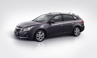
La novedad mundial que trae la marca global es el Chevrolet Cruze SW, la tercera carrocería de la gama Cruze. Se venderá en cuestión de meses, y tendrá cinco motorizaciones para elegir, en gasolina y en diesel. También presenta algunas evoluciones que no tienen las versiones sedán y compacta todavía.
Estrena nuevo frontal, con nuevas ópticas y luces antinieblas, además de luces diurnas. Aumentan las posibilidades de personalización con nuevas llantas, 10 colores exteriores y más tejidos para los asientos. La consola central recibe algunos refinamientos y el nuevo sistema telemático y multimedia Chevrolet MyLink.
Esto último implica que recibe Bluetooth y Bluetooth Audio, pantalla táctil de 7”, conexión USB, compatibilidad con smartphones, navegación, etc. Además, recibe el acceso inteligente “manos libres”, basta con llevar las llaves en el bolsillo, y para arrancar el coche, bastará con pulsar el botón Start/Stop.
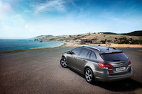
En cuanto a motores, estarán los actuales 1.6 (124 CV) y 1.8 (141 CV) con admisión atmosférica en gasolina. Serán complementados por el 1.4 Turbo (140 CV), al igual que en EEUU, donde ambas posibilidades se pueden elegir. El 1.4 Turbo debería reducir los consumos, no solo por lo evidente, también por el Stop&Start.
En cuanto a los Diesel, además del 2.0 D (160 CV), se incorpora un 1.7 D (130 CV) para hacer el modelo más accesible, y porque no todo el mundo necesita tanto caballo. El 1.7 escapa al impuesto de matriculación, gasta 4,5 l/100 km, no es el más austero del segmento pero cumple a la perfección.
Ambos motores Diesel tendrán Stop&Start. Por otro lado, el Cruze SW tendrá 500 litros de maletero en configuración normal, y 1.500 litros abatiendo la segunda fila de asientos. Las barras de carga del techo serán de serie en todos los acabados. No conocemos sus precios, pero seguirán siendo de derribo.
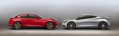
Chevrolet Code 130R, Tru 140S y Malibu
Para complementar la asistencia al salón suizo, han traído los Code 130R (unidad roja) y Tru 140S (unidad gris), dos propuestas de jóvenes diseñadores que no se habían visto antes en Europa. Son declaraciones de intenciones para coches pintones para dentro de unos años, al gusto del consumidor joven.
En el primer caso, nos hallamos ante un coche de proporciones poco vistas en el viejo continente, un coupé de tres puertas con cuatro plazas, pero este es de tracción delantera. Está basado en la misma plataforma que el Cruze. En los dos casos, las posibilidades de personalización son altas, para contentar a los más individualistas.
En el segundo caso, el 140S nos trae un superdeportivo, pero en talla pequeñita, con motor turbo de gasolina y propulsión trasera. Cuenta con cuatro plazas, y sería una alternativa muy asequible para entrar al mundo de la propulsión, eso si llega a venderse en Europa.
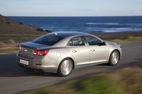
Por último, el Chevrolet Malibu anticipa su desembarco en nuestro mercado. Inicialmente solo se va a vender con una motorización gasolina 2.4 (167 CV), con caja de cambios manual o automática de seis velocidades. Es un motor claramente de origen americano.
Los que esperen hasta el verano, podrán elegir el motor 2.0 Diesel (160 CV), con 350 Nm de par máximo. Si aspiran a comerse parte de la tarta del segmendo D, no pueden ignorar los deseos europeos de repostar en las mangueras negras. La mayoría de las ventas de este segmento corresponden siempre a petroleros.
El motor Diesel también podrá tener cambio automático de seis velocidades. El retirado Epica también tenía esas posibilidades, pero era un producto que entraba a nuestro mercado con calzador, demasiado orientado a mercado asiático. Con el Malibu han aprendido la lección, o eso creemos.
Chevrolet Code 130R y Tru 140S
(Haz click en una imagen para ampliarla)
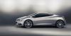
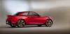
Chevrolet Malibu
(Haz click en una imagen para ampliarla)
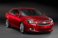
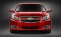
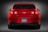
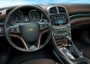
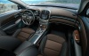
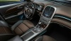
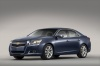
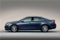
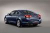
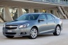
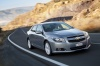
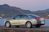
Tue, 06 Mar 2012 11:30:25 GMT
El HRT F112 ya rueda en pista
El HRT F112 ya rueda en pista
La jornada de ayer sirvió para que la parrilla del Mundial de Fórmula 1 recibiera a sus dos últimos inquilinos. Por la mañana, Marussia F1 Team (antigua Virgin Racing) presentó su monoplaza para 2012, el MR01, aunque con algo de trampa. A día de hoy, la escudería anglo -rusa no ha pasado el 100% de los test obligatorios de la FIA por lo que su coche tan sólo sirve para grabar imágenes y no podría ser utilizado en el primera gran premio del año. Quien no tendrá esos problemas es HRT. Durante la tarde, Narain Karthikeyan recorrió los primeros kilómetros del último monoplaza de la escudería española, el F112. Un monoplaza muy similar al de los años anteriores pero que si destaca por su nueva decoración grana y oro. El F112 superó los crash-test la semana previa a los últimos test de pretemporada y aunque esperaban tener el monoplaza lista para el domingo, no pudo ser. Ambas escuderías utilizaron los denominados “filming-day” para rodar. Estas jornadas, destinadas a la realización de imágenes promocionales, están permitidas por la FIA aunque con ciertas limitaciones. Para evitar que nadie se pase de listo, en el pasado ya ha ocurrido, y las utilice como si fuera un test en toda regla, los “filming day” están limitados en distancia, máximo 100 kilómetros, y se realizan con neumáticos específicos para demostraciones. Ambas escuderías podrán llegar al próximo Gran Premio de Australia, del 16 al 18 de marzo (aquí tienes el calendario), con los deberes hechos a medias. Si en años anteriores Marussia sí que llegaba tras haber podido probar su monoplaza, en el caso de HRT esta sensación va a ser nueva. Más información en Motorpasión F1
La jornada de ayer sirvió para que la parrilla del Mundial de Fórmula 1 recibiera a sus dos últimos inquilinos. Por la mañana, Marussia F1 Team (antigua Virgin Racing) presentó su monoplaza para 2012, el MR01, aunque con algo de trampa. A día de hoy, la escudería anglo -rusa no ha pasado el 100% de los test obligatorios de la FIA por lo que su coche tan sólo sirve para grabar imágenes y no podría ser utilizado en el primera gran premio del año.
Quien no tendrá esos problemas es HRT. Durante la tarde, Narain Karthikeyan recorrió los primeros kilómetros del último monoplaza de la escudería española, el F112. Un monoplaza muy similar al de los años anteriores pero que si destaca por su nueva decoración grana y oro. El F112 superó los crash-test la semana previa a los últimos test de pretemporada y aunque esperaban tener el monoplaza lista para el domingo, no pudo ser.
Ambas escuderías utilizaron los denominados “filming-day” para rodar. Estas jornadas, destinadas a la realización de imágenes promocionales, están permitidas por la FIA aunque con ciertas limitaciones. Para evitar que nadie se pase de listo, en el pasado ya ha ocurrido, y las utilice como si fuera un test en toda regla, los “filming day” están limitados en distancia, máximo 100 kilómetros, y se realizan con neumáticos específicos para demostraciones.
Ambas escuderías podrán llegar al próximo Gran Premio de Australia, del 16 al 18 de marzo (aquí tienes el calendario), con los deberes hechos a medias. Si en años anteriores Marussia sí que llegaba tras haber podido probar su monoplaza, en el caso de HRT esta sensación va a ser nueva.
Más información en Motorpasión F1
Tue, 06 Mar 2012 09:30:00 GMT
Rolls-Royce Phantom Series II
Rolls-Royce Phantom Series II
En 2003 salió al mercado el Rolls-Royce Phantom, el primer modelo de la era BMW. Le siguieron las variantes Drophead Coupé (2007), Coupé (2008) y de batalla larga (2005). Nueve años después, recibe una actualización moderada para aguantar el tipo hasta su reemplazo en torno a 2016. En la primera foto tenemos a la gama completa posando con los rascacielos de Dubái. Tal es la maestría del retoque, que no solo han conseguido una imagen imposible (doy fe) desde las islas “Palma”, es que se han molestado incluso en terminar los edificios que ahora están a medias, como el de la torre retorcida. Volviendo a nuestros fantasmones, los cambios son muy discretos. Una pequeña actualización estética, tímida reducción de consumos, mejoras en el equipamiento telemático y poco más. Pensemos que es un coche que tiende a la intemporalidad, no se buscan grandes modificaciones en este restyling. Exteriormente tiene nuevos paragolpes, con un diseño diferente en los faros. No solo adopta el obligatorio iluminado diurno por LED, sino que toda la iluminación a secas es LED. Rolls-Royce afirma que es el primer turismo que tiene de serie iluminación LED para todo. Además, la iluminación es direccionable en curva. A nivel dinámico, recibe una nueva transmisión ZF de ocho velocidades, que ayudan a bajar el consumo de su V12 un 10%. Eso significa que de 16,7 l/100 km se baja a 15 l/100 km, algo es. Además, el eje trasero recibe un nuevo diferencial para tener mejor comportamiento en curva. Recordad que hablamos de ballenas de más de 2,5 toneladas. El Stop&Start se queda para los coches de plebeyos, no lo incorpora. Respecto al interior, recibe una nueva pantalla de 8,8 pulgadas y un nuevo control multimedia. Tiene tres cámaras de aparcamiento, navegación 3D con elevación del terreno y función de rutas turísticas. Bautista o Alfred siguen siendo opcionales. Galería de fotos (Haz click en una imagen para ampliarla)
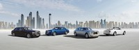
En 2003 salió al mercado el Rolls-Royce Phantom, el primer modelo de la era BMW. Le siguieron las variantes Drophead Coupé (2007), Coupé (2008) y de batalla larga (2005). Nueve años después, recibe una actualización moderada para aguantar el tipo hasta su reemplazo en torno a 2016.
En la primera foto tenemos a la gama completa posando con los rascacielos de Dubái. Tal es la maestría del retoque, que no solo han conseguido una imagen imposible (doy fe) desde las islas “Palma”, es que se han molestado incluso en terminar los edificios que ahora están a medias, como el de la torre retorcida.
Volviendo a nuestros fantasmones, los cambios son muy discretos. Una pequeña actualización estética, tímida reducción de consumos, mejoras en el equipamiento telemático y poco más. Pensemos que es un coche que tiende a la intemporalidad, no se buscan grandes modificaciones en este restyling.
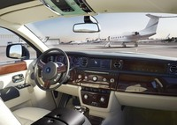
Exteriormente tiene nuevos paragolpes, con un diseño diferente en los faros. No solo adopta el obligatorio iluminado diurno por LED, sino que toda la iluminación a secas es LED. Rolls-Royce afirma que es el primer turismo que tiene de serie iluminación LED para todo. Además, la iluminación es direccionable en curva.
A nivel dinámico, recibe una nueva transmisión ZF de ocho velocidades, que ayudan a bajar el consumo de su V12 un 10%. Eso significa que de 16,7 l/100 km se baja a 15 l/100 km, algo es. Además, el eje trasero recibe un nuevo diferencial para tener mejor comportamiento en curva. Recordad que hablamos de ballenas de más de 2,5 toneladas.
El Stop&Start se queda para los coches de plebeyos, no lo incorpora. Respecto al interior, recibe una nueva pantalla de 8,8 pulgadas y un nuevo control multimedia. Tiene tres cámaras de aparcamiento, navegación 3D con elevación del terreno y función de rutas turísticas. Bautista o Alfred siguen siendo opcionales.
Galería de fotos
(Haz click en una imagen para ampliarla)
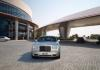
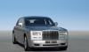
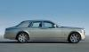
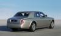
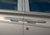
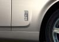
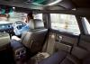
Tue, 06 Mar 2012 08:00:51 GMT
Mercedes Clase A 2012
Mercedes Clase A 2012
Desde el Salón del Automóvil de Ginebra nos llegan las fotografías oficiales del protagonista principal del stand de Mercedes-Benz, el nuevo Mercedes-Benz Clase A 2012, que tras tanta foto espía deja ver finalmente su nueva y moderna cara. Llegará a los concesionarios después del verano. Inspirado en el Clase A Concept presentado el año pasado en el Salón de Shangai, esta nueva generación del compacto alemán llega directo para enfrentarse cara a cara con su competencia directa, el nuevo Audi A3, también presentado en Ginebra, y el BMW Serie 1. El diseño de este nuevo Clase A se caracteriza por la fluidez de sus líneas, bien marcadas, por un frontal muy al estilo de otros modelos recientes de la marca como el Clase B, una vista lateral muy atractiva, un pequeño alerón de techo y una altura 18 centímetros menor que su antecesor. Mide 4,29 metros de largo, 1,78 metros de ancho y 1,43 metros de alto. El nuevo Mercedes-Benz Clase A toma prestada la idea de otras marcas de estructurar la gama en base a líneas de diseño y equipamiento, que serán tres: Urban, Style y AMG Sport. La versión más deportiva y dinámica es la AMG Sport, desarrollada por AMG, y cuenta con la parrilla cuya estructura forma un patrón de diamantes, llantas AMG de 18 pulgadas y cinco radios (235/40 R18) y pinzas de freno de color rojo a juego con algunos detalles del mismo color. Las versiones A 250 Sport y A 220 CDI Sport se benefician de un eje delantero desarrollado por AMG, al igual que de una puesta a punto de la suspensión. Si echamos un vistazo al interior, que puede acomodar a cinco pasajeros, destacan los vistosos difusores de aire o el moderno volante, y llaman la atención los asientos integrales opcionales. La selección de materiales para la tapicería o las inserciones es tan amplia como cabe esperar. Como viene siendo habitual, una de las preocupaciones de la marca germana es la seguridad, por lo que el Clase A equipa de serie sistemas como el Attention Assist, la función Hold del freno o el asistente de arranque en pendiente, y ofrece de forma opcional el Distronic Plus, luces adaptativas, asistentes de ángulo muerto y mantenimiento de carril o cámara de marcha atrás. MotorizacionesEl nuevo Mercedes-Benz Clase A esconderá bajo el capó diferentes motorizaciones de gasolina y diésel, aunque la marca está especialmente orgullosa de presentar el primer Mercedes-Benz con unas emisiones de dióxido de carbono de sólo 99 gramos por kilómetro. Todos los motores montan Eco Start/Stop y pueden equipar opcionalmente cambio automático de doble embrague y siete relaciones, aunque de serie llevan una caja manual de seis velocidades. La marca también afirma que es posible equipar la tracción integral 4MATIC. En la gama de motores gasolina, todos ellos con turbo e inyección directa, la versión de acceso es el A 180, con motor 1.6 litros de 115 CV. Los siguientes escalones montan un 2.0 litros de 156 CV en el caso del A 200 y de 211 CV si hablamos del A 250. Si echamos un vistazo a las opciones turbodiésel encontramos como versión de acceso el A 180 CDI de 109 CV y un par motor máximo de 250 Nm. El siguiente paso es el A 200 CDI, que arroja 136 CV y un par máximo de 300 Nm. El más prestacional de los diésel es el 2.2 litros del A 220 CDI, que desarrolla 170 CV y 350 Nm de par máximo. Galería de fotos (Haz click en una imagen para ampliarla)
En Motorpasión | Mercedes-Benz Clase A Concept para el Salón de Shangai
Desde el Salón del Automóvil de Ginebra nos llegan las fotografías oficiales del protagonista principal del stand de Mercedes-Benz, el nuevo Mercedes-Benz Clase A 2012, que tras tanta foto espía deja ver finalmente su nueva y moderna cara. Llegará a los concesionarios después del verano.
Inspirado en el Clase A Concept presentado el año pasado en el Salón de Shangai, esta nueva generación del compacto alemán llega directo para enfrentarse cara a cara con su competencia directa, el nuevo Audi A3, también presentado en Ginebra, y el BMW Serie 1.
El diseño de este nuevo Clase A se caracteriza por la fluidez de sus líneas, bien marcadas, por un frontal muy al estilo de otros modelos recientes de la marca como el Clase B, una vista lateral muy atractiva, un pequeño alerón de techo y una altura 18 centímetros menor que su antecesor. Mide 4,29 metros de largo, 1,78 metros de ancho y 1,43 metros de alto.
El nuevo Mercedes-Benz Clase A toma prestada la idea de otras marcas de estructurar la gama en base a líneas de diseño y equipamiento, que serán tres: Urban, Style y AMG Sport.
La versión más deportiva y dinámica es la AMG Sport, desarrollada por AMG, y cuenta con la parrilla cuya estructura forma un patrón de diamantes, llantas AMG de 18 pulgadas y cinco radios (235/40 R18) y pinzas de freno de color rojo a juego con algunos detalles del mismo color. Las versiones A 250 Sport y A 220 CDI Sport se benefician de un eje delantero desarrollado por AMG, al igual que de una puesta a punto de la suspensión.
Si echamos un vistazo al interior, que puede acomodar a cinco pasajeros, destacan los vistosos difusores de aire o el moderno volante, y llaman la atención los asientos integrales opcionales. La selección de materiales para la tapicería o las inserciones es tan amplia como cabe esperar.
Como viene siendo habitual, una de las preocupaciones de la marca germana es la seguridad, por lo que el Clase A equipa de serie sistemas como el Attention Assist, la función Hold del freno o el asistente de arranque en pendiente, y ofrece de forma opcional el Distronic Plus, luces adaptativas, asistentes de ángulo muerto y mantenimiento de carril o cámara de marcha atrás.
Motorizaciones
El nuevo Mercedes-Benz Clase A esconderá bajo el capó diferentes motorizaciones de gasolina y diésel, aunque la marca está especialmente orgullosa de presentar el primer Mercedes-Benz con unas emisiones de dióxido de carbono de sólo 99 gramos por kilómetro.
Todos los motores montan Eco Start/Stop y pueden equipar opcionalmente cambio automático de doble embrague y siete relaciones, aunque de serie llevan una caja manual de seis velocidades. La marca también afirma que es posible equipar la tracción integral 4MATIC.
En la gama de motores gasolina, todos ellos con turbo e inyección directa, la versión de acceso es el A 180, con motor 1.6 litros de 115 CV. Los siguientes escalones montan un 2.0 litros de 156 CV en el caso del A 200 y de 211 CV si hablamos del A 250.
Si echamos un vistazo a las opciones turbodiésel encontramos como versión de acceso el A 180 CDI de 109 CV y un par motor máximo de 250 Nm. El siguiente paso es el A 200 CDI, que arroja 136 CV y un par máximo de 300 Nm. El más prestacional de los diésel es el 2.2 litros del A 220 CDI, que desarrolla 170 CV y 350 Nm de par máximo.
Galería de fotos
(Haz click en una imagen para ampliarla)
En Motorpasión | Mercedes-Benz Clase A Concept para el Salón de Shangai
Mon, 05 Mar 2012 21:50:00 GMT
Lamborghini Aventador J, aún más radical
Lamborghini Aventador J, aún más radical
Hace apenas unos días pudimos ver una primera imagen de lo que parecía ser un Lamborghini Aventador descapotable. Hoy mismo la marca italiana ha revelado la imagen definitiva y los primeros datos de su nueva creación, el Lamborghini Aventador J. Empecemos por el principio, el nombre. En lugar de emplear la denominación Spyder para apellidar a esta versión descapotable del Lamborghini Aventador, han querido utilizar el mismo código que emplea la FIA para limitar algunas categorías de competición. Un enorme guiño por tanto al mundo de las carreras. Después de las presentaciones, examinemos cómo es el exterior del nuevo modelo, que es más largo que su hermano (mide 4.89 metros de largo) y más estrecho en la parte delantera. Lo primero que llama la atención es que, ni más ni menos, no hay luneta delantera. Menudo golpe de efecto han dado los de Sant’Agata Bolognese. Desde luego es una maniobra muy atrevida, que acerca mucho este coche al mundo de la competición. Diseño exterior importado de la competición Por supuesto, los italianos advierten que habrá que vestir el equipamiento adecuado para poder conducir este coche, lo que en la práctica significa que habrá que usar casco o gafas protectoras. Después sorprende el llamativo color de la carrocería. Se trata de un color exlclusivo para Lamborghini Aventador J, un intenso rojo con un toque cromado (según dice la marca), que no tiene un nombre específico. Si pasamos a examinar el lateral y la parte trasera del vehículo también nos encontraremos con algunas sorpresas. Para empezar, el espejo retrovisor central se ha colocado a modo de periscopio, y para seguir, el alerón trasero aparece suspendido de dos ganchos que brotan desde el difusor trasero. Es precisamente esta parte, la trasera, donde más agresividad acumula el Lamborghini Aventador J. Su hermano con techo aún conserva algo de pintura en esa zona, pero esta versión descapotable acumula una cantidad de fibra de carbono digna de un coche de competición. Además una importante superficie de la parte trasera está fabricada en metal pintado de negro mate, cuya función es la de evacuar calor. Por último, el Lamborghini Aventador J cuenta con cuatro salidas de escape, que sin ninguna duda, producirán un sonido espectacular. Más radical que su hermano Según Lamborghini, el Aventador J y su hermano comparten el mismo motor de doce cilindros y 6.5 litros de cubicaje, pero en el primero podemos esperar un comportamiento más radical debido a una serie de mejoras que se han llevado a cabo. La primera de esas mejoras es una reducción de peso. Gracias a la ausencia del sistema de navegación, del aire acondicionado y del techo, el nuevo modelo apenas pesa en seco 1.575 kilogramos, lo mismo que su hermano coupé (lo normal es que el aumento de la rigidez del chasis pase factura en la báscula). Además, como ya decíamos anteriormente, el uso de la fibra de carbono se ha extendido a más partes del coche, como los propios asientos, y además se ha empleado un nuevo tipo de material que es incluso más ligero. Un interior a juego Al igual que en el exterior, en el interior las concesiones a la comodidad son mínimas. La consola central ha sido sustituida por un panel que aloja el botón de arranque, y las únicas pantallas que veremos se sitúan detrás del volante. Será en ellas donde podamos ajustar las diferentes configuraciones que el modelo ofrece al conductor. Aunque la marca no ha desvelado ninguna fotografía específica del interior, asegura que visualmente existe una separación suficiente entre conductor y pasajero, de manera que podamos disfrutar de un mayor ángulo de visión. Además, los guiños a la competición deberían estar muy presentes por todo el habitáculo, que se debería de ver mucho más simplificado y orientado a mejorar el rendimiento del conductor.
Galería de fotos(Haz click en una imagen para ampliarla)
En Motorpasión | ¿Será este el Lamborghini Aventador J Speedster?
.jpg)
Hace apenas unos días pudimos ver una primera imagen de lo que parecía ser un Lamborghini Aventador descapotable. Hoy mismo la marca italiana ha revelado la imagen definitiva y los primeros datos de su nueva creación, el Lamborghini Aventador J.
Empecemos por el principio, el nombre. En lugar de emplear la denominación Spyder para apellidar a esta versión descapotable del Lamborghini Aventador, han querido utilizar el mismo código que emplea la FIA para limitar algunas categorías de competición. Un enorme guiño por tanto al mundo de las carreras.
Después de las presentaciones, examinemos cómo es el exterior del nuevo modelo, que es más largo que su hermano (mide 4.89 metros de largo) y más estrecho en la parte delantera. Lo primero que llama la atención es que, ni más ni menos, no hay luneta delantera. Menudo golpe de efecto han dado los de Sant’Agata Bolognese. Desde luego es una maniobra muy atrevida, que acerca mucho este coche al mundo de la competición.
.jpg)
Diseño exterior importado de la competición
Por supuesto, los italianos advierten que habrá que vestir el equipamiento adecuado para poder conducir este coche, lo que en la práctica significa que habrá que usar casco o gafas protectoras.
Después sorprende el llamativo color de la carrocería. Se trata de un color exlclusivo para Lamborghini Aventador J, un intenso rojo con un toque cromado (según dice la marca), que no tiene un nombre específico.
Si pasamos a examinar el lateral y la parte trasera del vehículo también nos encontraremos con algunas sorpresas. Para empezar, el espejo retrovisor central se ha colocado a modo de periscopio, y para seguir, el alerón trasero aparece suspendido de dos ganchos que brotan desde el difusor trasero.
.jpg)
Es precisamente esta parte, la trasera, donde más agresividad acumula el Lamborghini Aventador J. Su hermano con techo aún conserva algo de pintura en esa zona, pero esta versión descapotable acumula una cantidad de fibra de carbono digna de un coche de competición.
Además una importante superficie de la parte trasera está fabricada en metal pintado de negro mate, cuya función es la de evacuar calor. Por último, el Lamborghini Aventador J cuenta con cuatro salidas de escape, que sin ninguna duda, producirán un sonido espectacular.
Más radical que su hermano
Según Lamborghini, el Aventador J y su hermano comparten el mismo motor de doce cilindros y 6.5 litros de cubicaje, pero en el primero podemos esperar un comportamiento más radical debido a una serie de mejoras que se han llevado a cabo.
.jpg)
La primera de esas mejoras es una reducción de peso. Gracias a la ausencia del sistema de navegación, del aire acondicionado y del techo, el nuevo modelo apenas pesa en seco 1.575 kilogramos, lo mismo que su hermano coupé (lo normal es que el aumento de la rigidez del chasis pase factura en la báscula).
Además, como ya decíamos anteriormente, el uso de la fibra de carbono se ha extendido a más partes del coche, como los propios asientos, y además se ha empleado un nuevo tipo de material que es incluso más ligero.
Un interior a juego
Al igual que en el exterior, en el interior las concesiones a la comodidad son mínimas. La consola central ha sido sustituida por un panel que aloja el botón de arranque, y las únicas pantallas que veremos se sitúan detrás del volante. Será en ellas donde podamos ajustar las diferentes configuraciones que el modelo ofrece al conductor.
.jpg)
Aunque la marca no ha desvelado ninguna fotografía específica del interior, asegura que visualmente existe una separación suficiente entre conductor y pasajero, de manera que podamos disfrutar de un mayor ángulo de visión.
Además, los guiños a la competición deberían estar muy presentes por todo el habitáculo, que se debería de ver mucho más simplificado y orientado a mejorar el rendimiento del conductor.
Galería de fotos
(Haz click en una imagen para ampliarla)
En Motorpasión | ¿Será este el Lamborghini Aventador J Speedster?
Mon, 05 Mar 2012 19:32:51 GMT
Bentley EXP 9 F, aquí está su prototipo de SUV
Bentley EXP 9 F, aquí está su prototipo de SUV
¿Qué diablos es esto? Pues la última ocurrencia estiĺistica de Bentley, que amenaza en convertirse en un modelo de producción real, y dicha amenaza viene de atrás. De momento el Bentley EXP 9 F (telita con el nombre) es un prototipo, pero toda una declaración de intenciones sobre SUV de lujo. Y cuando hablamos de lujo, hablamos de lujo a lo bestia. Según la marca, es una fusión de varios extremos, la tecnología y la artesanía, más las prestaciones y el lujo. Su diseño tiene guiños a modelos del pasado, pero es totalmente actual. Está repleto de pantallas TFT e integración con tabletas digitales para que los pasajeros de atrás puedan dedicarse al bisnes. Como es un prototipo y no hay que quedarse cortos, le han calzado ruedas de 23 pulgadas y un motoraco 6.0 W12 con unos 600 CV y 800 Nm de par máximo. Tiene tracción total y debería tener unas habilidades fuera de carretera más que suficientes, pero sin ensuciarlo mucho que no queda bien, ¿eh? Se están planteando otras posibilidades, como el 4.0 V8 Biturbo recientemente presentado para el Continental, incluso una opción híbrida. La palabra “Diesel” no aparece en todo el comunicado. La transmisión tiene ocho velocidades, y en teoría en aceleración debería ser de lo mejorcito del segmento, aunque no dan una cifra. El exterior, bueno, habrá quien piense que no hay por dónde cogerlo, pero se suele decir eso de cualquier SUV tan grande. Por dentro mejora mucho, es cierto que la tecnología y los acabados artesanales de lujo son compatibles, ¡y cómo! No puede faltar el botellero para el Moët-Chandon, ni sus exquisitas tapicerías, inserciones de madera, aluminios pulidos… Está concebido como un 4+1, es decir, circunstancialmente podrá viajar un niño en la plaza central trasera. Los viajeros de atrás tienen asientos de configuración variable, se puede aumentar espacio en el maletero o espacio para las piernas para viajar en primera clase. Ojo a los ajustes de los asientos, están en el centro, delante y detrás. Su maletero no es la enésima maravilla en espacio, pero puede tener un kit de picnic totalmente hecho a medida, para ir a la campiña inglesa con mucho glamour. Podían haberlo hecho más grande, pero quisieron rematar la parte trasera con ese corte tan a lo coupé, para que no resulte muy anguloso y cuadrado. El tablero de instrumentos es totalmente personalizable, al gusto del cliente. Por dentro me parece una preciosidad, por fuera no, y ahí lo dejo. No está fuertemente orientado al conductor, el pasajero de la derecha tiene buen acceso a los mandos. Me encanta ese toque de salpicadero tan retro, pero también tan futurista. Con este modelo Bentley quiere evaluar la posibilidad de su tercera familia de modelos, tras los Mulsanne y Continental. En sus 160 concesionarios seguro que encontrarán gente a la que le sobre el dinero como para interesarse por él. Si lo acaban vendiendo, ¿acabará Rolls-Royce haciendo lo mismo? Galería de fotos (Haz click en una imagen para ampliarla)
En Motorpasión | ¿Bentley fabricará un SUV?
¿Qué diablos es esto? Pues la última ocurrencia estiĺistica de Bentley, que amenaza en convertirse en un modelo de producción real, y dicha amenaza viene de atrás. De momento el Bentley EXP 9 F (telita con el nombre) es un prototipo, pero toda una declaración de intenciones sobre SUV de lujo. Y cuando hablamos de lujo, hablamos de lujo a lo bestia.
Según la marca, es una fusión de varios extremos, la tecnología y la artesanía, más las prestaciones y el lujo. Su diseño tiene guiños a modelos del pasado, pero es totalmente actual. Está repleto de pantallas TFT e integración con tabletas digitales para que los pasajeros de atrás puedan dedicarse al bisnes.
Como es un prototipo y no hay que quedarse cortos, le han calzado ruedas de 23 pulgadas y un motoraco 6.0 W12 con unos 600 CV y 800 Nm de par máximo. Tiene tracción total y debería tener unas habilidades fuera de carretera más que suficientes, pero sin ensuciarlo mucho que no queda bien, ¿eh?
Se están planteando otras posibilidades, como el 4.0 V8 Biturbo recientemente presentado para el Continental, incluso una opción híbrida. La palabra “Diesel” no aparece en todo el comunicado. La transmisión tiene ocho velocidades, y en teoría en aceleración debería ser de lo mejorcito del segmento, aunque no dan una cifra.
El exterior, bueno, habrá quien piense que no hay por dónde cogerlo, pero se suele decir eso de cualquier SUV tan grande. Por dentro mejora mucho, es cierto que la tecnología y los acabados artesanales de lujo son compatibles, ¡y cómo! No puede faltar el botellero para el Moët-Chandon, ni sus exquisitas tapicerías, inserciones de madera, aluminios pulidos…
Está concebido como un 4+1, es decir, circunstancialmente podrá viajar un niño en la plaza central trasera. Los viajeros de atrás tienen asientos de configuración variable, se puede aumentar espacio en el maletero o espacio para las piernas para viajar en primera clase. Ojo a los ajustes de los asientos, están en el centro, delante y detrás.
Su maletero no es la enésima maravilla en espacio, pero puede tener un kit de picnic totalmente hecho a medida, para ir a la campiña inglesa con mucho glamour. Podían haberlo hecho más grande, pero quisieron rematar la parte trasera con ese corte tan a lo coupé, para que no resulte muy anguloso y cuadrado.
El tablero de instrumentos es totalmente personalizable, al gusto del cliente. Por dentro me parece una preciosidad, por fuera no, y ahí lo dejo. No está fuertemente orientado al conductor, el pasajero de la derecha tiene buen acceso a los mandos. Me encanta ese toque de salpicadero tan retro, pero también tan futurista.
Con este modelo Bentley quiere evaluar la posibilidad de su tercera familia de modelos, tras los Mulsanne y Continental. En sus 160 concesionarios seguro que encontrarán gente a la que le sobre el dinero como para interesarse por él. Si lo acaban vendiendo, ¿acabará Rolls-Royce haciendo lo mismo?
Galería de fotos
(Haz click en una imagen para ampliarla)
En Motorpasión | ¿Bentley fabricará un SUV?
Mon, 05 Mar 2012 17:37:32 GMT
McLaren MP4-12C High Sport, primeras imágenes oficiales
McLaren MP4-12C High Sport, primeras imágenes oficiales
Desde hoy mismo podeis disfrutar en Motorpasión de la primera prueba exclusiva del McLaren MP4-12C en España. El superdeportivo británico ha pasado por nuestras manos en su versión normal, pero hay una más radical y deportiva, el McLaren MP4-12C High Sport. Ésta versión especial corresponde a una serie muy limitada, de solo cinco unidades las cuales podéis ver todas juntas en las fotos. El cambio más destacado afecta al motor, que pasa de 600 a 675 caballos de potencia. Por otro lado y como salta a la vista, los cambios aerodinámicos son considerables. El paragolpes delantero está rediseñado, tomando como modelo a seguir la versión de carreras McLaren MP4-12C GT3. En la trasera, también hay cambios en el difusor y la forma de éste. Las llantas tienen un diseño específico y hay unas inscripciones con las letras HS en la trasera y High Sport en el vano de las puertas. Este último solo se ve cuando tiene las puertas abiertas. Estas cinco unidades vienen con una placa identificativa que los acredita como auténticos Limited Edition by McLaren. Sin duda alguna los McLaren MP4-12C High Sport serán en unos años las unidades más codiciadas por los coleccionistas de coches. Según nos han confirmado desde el Grupo Guarnieri, una de esas cinco unidades se ha vendido en España, aunque ya sabemos que no será la de color naranja ya que ésa unidad ya está en manos de su dueño en EEUU. Galería de fotos (Haz click en una imagen para ampliarla)
Vía | World Car Fans
Desde hoy mismo podeis disfrutar en Motorpasión de la primera prueba exclusiva del McLaren MP4-12C en España. El superdeportivo británico ha pasado por nuestras manos en su versión normal, pero hay una más radical y deportiva, el McLaren MP4-12C High Sport.
Ésta versión especial corresponde a una serie muy limitada, de solo cinco unidades las cuales podéis ver todas juntas en las fotos. El cambio más destacado afecta al motor, que pasa de 600 a 675 caballos de potencia.
Por otro lado y como salta a la vista, los cambios aerodinámicos son considerables. El paragolpes delantero está rediseñado, tomando como modelo a seguir la versión de carreras McLaren MP4-12C GT3. En la trasera, también hay cambios en el difusor y la forma de éste.
Las llantas tienen un diseño específico y hay unas inscripciones con las letras HS en la trasera y High Sport en el vano de las puertas. Este último solo se ve cuando tiene las puertas abiertas.
Estas cinco unidades vienen con una placa identificativa que los acredita como auténticos Limited Edition by McLaren. Sin duda alguna los McLaren MP4-12C High Sport serán en unos años las unidades más codiciadas por los coleccionistas de coches.
Según nos han confirmado desde el Grupo Guarnieri, una de esas cinco unidades se ha vendido en España, aunque ya sabemos que no será la de color naranja ya que ésa unidad ya está en manos de su dueño en EEUU.
Galería de fotos
(Haz click en una imagen para ampliarla)
Vía | World Car Fans
Wed, 07 Mar 2012 10:00:00 GMT
Volkswagen Amarok Canyon Concept
Volkswagen Amarok Canyon Concept
La división de vehículos comerciales de Volkswagen ha presentado en el Salón de Ginebra que se lleva a cabo estos días un prototipo muy peculiar de su pick-up, el Volkswagen Amarok. Se llama Canyon Concept o Amarok Sport y está “adaptado al deporte del momento: Kayak Freestyle”. De apariencia más imponente, el Amarok Sport es más alto y ancho que el de serie. Este concept es 85 milímetros más alto y gracias a molduras en los pasos de rueda también es unos 35 milímetros más ancho, para poder dar cabida a las llantas de cinco radios con gomas todoterreno en medidas 275/65 R18. Luce además un color de carrocería rojo anaranjado “baladi orange“ con efecto perla. Sobre el techo del Amarok encontramos un soporte con cuatro faros adicionales y bajo las puertas hay unos peldaños de acceso de accionamiento eléctrico que facilitan el acceso al habitáculo, que está bastante alto, y sólo se dejan ver cuando los necesitamos. En la caja de carga (revestida con neopreno) se fijan dos Kayak de fibra de carbono, cuyos remos van colocados en la cara interna del portón trasero. Diferentes redes y cajones permiten llevar además otros elementos como un casco o herramientas. Este Amarok Canyon Concept o Amarok Sport monta un 2.0 TDI biturbo que desarrolla 180 CV y un par motor máximo de 400 Nm entre las 1.500 y las 2.250 RPM, junto a la tracción total 4MOTION con caja reductora y diferencial trasero. En el habitáculo destacan los asientos de cuero con tapicería a dos colores, costuras en contraste de color rojo anaranjado (como el de la carrocería) tanto en asientos como en el volante, el pomo de la caja de cambios o en los biseles de los difusores de aire. En el salpicadero se integran además tres instrumentos que nos indican el ángulo de ascenso y de inclinación del vehículo. En Motorpasión | Volkswagen Amarok con techo duro, ya a la venta en España
La división de vehículos comerciales de Volkswagen ha presentado en el Salón de Ginebra que se lleva a cabo estos días un prototipo muy peculiar de su pick-up, el Volkswagen Amarok. Se llama Canyon Concept o Amarok Sport y está “adaptado al deporte del momento: Kayak Freestyle”.
De apariencia más imponente, el Amarok Sport es más alto y ancho que el de serie. Este concept es 85 milímetros más alto y gracias a molduras en los pasos de rueda también es unos 35 milímetros más ancho, para poder dar cabida a las llantas de cinco radios con gomas todoterreno en medidas 275/65 R18. Luce además un color de carrocería rojo anaranjado “baladi orange“ con efecto perla.
Sobre el techo del Amarok encontramos un soporte con cuatro faros adicionales y bajo las puertas hay unos peldaños de acceso de accionamiento eléctrico que facilitan el acceso al habitáculo, que está bastante alto, y sólo se dejan ver cuando los necesitamos. En la caja de carga (revestida con neopreno) se fijan dos Kayak de fibra de carbono, cuyos remos van colocados en la cara interna del portón trasero. Diferentes redes y cajones permiten llevar además otros elementos como un casco o herramientas.
Este Amarok Canyon Concept o Amarok Sport monta un 2.0 TDI biturbo que desarrolla 180 CV y un par motor máximo de 400 Nm entre las 1.500 y las 2.250 RPM, junto a la tracción total 4MOTION con caja reductora y diferencial trasero.
En el habitáculo destacan los asientos de cuero con tapicería a dos colores, costuras en contraste de color rojo anaranjado (como el de la carrocería) tanto en asientos como en el volante, el pomo de la caja de cambios o en los biseles de los difusores de aire. En el salpicadero se integran además tres instrumentos que nos indican el ángulo de ascenso y de inclinación del vehículo.
En Motorpasión | Volkswagen Amarok con techo duro, ya a la venta en España
Wed, 07 Mar 2012 06:00:00 GMT
Brabus Ultimate 120, un cabrio muy bravo
Brabus Ultimate 120, un cabrio muy bravo
Con ánimo de seguir la saga Ultimate, el preparador alemán Brabus presenta estos días en el Salón de Ginebra un Smart ForTwo Cabrio muy bravo, el Brabus Ultimate 120, una edición limitada de la que se fabricarán 120 unidades para todo el mundo con un precio de partida de 45.900 euros, curiosamente idéntico al del Brabus Ultimate 112 de 2007. El Brabus Ultimate 120 recibe un kit de carrocería que lo hace más ancho e incluye también paragolpes delanteros y taloneras. La pintura especial de la carrocería es a gusto del cliente. En el caso de la unidad expuesta en Ginebra es un rojo metálico intenso. Las llantas Brabus Monoblock F Platinum Edition son de 18 pulgadas y montan gomas en medidas 205/35 R18 y 235/30 R18, delante y detrás, respectivamente. El motor tres cilindros de gasolina del Smart ForTwo Cabrio desarrolla tras pasar por las manos del preparador alemán 120 CV a 6.000 RPM y 160 Nm de par motor máximo entre las 2.250 y las 3.750 vueltas. El cambio es automático pero accionable mediante las levas que equipa tras el pequeño volante de 34 centímetros de diámetro. El sprint de 0 a 100 km/h le lleva 8,9 segundos y la velocidad está electrónicamente limitada a 170 km/h. Para estar a la altura de sus capacidades, el Ultimate 120 recibe un sistema de suspensión ajustable de tipo coilover calibrada para las gomas de perfil bajo y las vías ensanchadas, y un sistema de frenos con pinzas de cuatro pistones en el color de la carrocería. A todo esto acompaña también el escape deportivo de acero inoxidable con doble salida cromada. El habitáculo destaca por la tapicería de cuero con costuras en contraste, volante deportivo Brabus, asientos Recaro Sportster de cuero con cubierta trasera en el color de la carrocería, pedalera de aluminio y diversos elementos como los marcos de los relojes y las molduras del salpicadero o las puertas en éste mismo color. El equipamiento incluye aire acondicionado, sistema de audio y navegador, entre otras cosas. Galería de fotos (Haz click en una imagen para ampliarla)
En Motorpasión | Brabus Ultimate 112: edición limitada del Smart ForTwo
Con ánimo de seguir la saga Ultimate, el preparador alemán Brabus presenta estos días en el Salón de Ginebra un Smart ForTwo Cabrio muy bravo, el Brabus Ultimate 120, una edición limitada de la que se fabricarán 120 unidades para todo el mundo con un precio de partida de 45.900 euros, curiosamente idéntico al del Brabus Ultimate 112 de 2007.
El Brabus Ultimate 120 recibe un kit de carrocería que lo hace más ancho e incluye también paragolpes delanteros y taloneras. La pintura especial de la carrocería es a gusto del cliente. En el caso de la unidad expuesta en Ginebra es un rojo metálico intenso. Las llantas Brabus Monoblock F Platinum Edition son de 18 pulgadas y montan gomas en medidas 205/35 R18 y 235/30 R18, delante y detrás, respectivamente.
El motor tres cilindros de gasolina del Smart ForTwo Cabrio desarrolla tras pasar por las manos del preparador alemán 120 CV a 6.000 RPM y 160 Nm de par motor máximo entre las 2.250 y las 3.750 vueltas. El cambio es automático pero accionable mediante las levas que equipa tras el pequeño volante de 34 centímetros de diámetro. El sprint de 0 a 100 km/h le lleva 8,9 segundos y la velocidad está electrónicamente limitada a 170 km/h.
Para estar a la altura de sus capacidades, el Ultimate 120 recibe un sistema de suspensión ajustable de tipo coilover calibrada para las gomas de perfil bajo y las vías ensanchadas, y un sistema de frenos con pinzas de cuatro pistones en el color de la carrocería. A todo esto acompaña también el escape deportivo de acero inoxidable con doble salida cromada.
El habitáculo destaca por la tapicería de cuero con costuras en contraste, volante deportivo Brabus, asientos Recaro Sportster de cuero con cubierta trasera en el color de la carrocería, pedalera de aluminio y diversos elementos como los marcos de los relojes y las molduras del salpicadero o las puertas en éste mismo color. El equipamiento incluye aire acondicionado, sistema de audio y navegador, entre otras cosas.
Galería de fotos
(Haz click en una imagen para ampliarla)
En Motorpasión | Brabus Ultimate 112: edición limitada del Smart ForTwo
Tue, 06 Mar 2012 17:00:00 GMT
Renault ZOE, un coche eléctrico de verdad desde 14.700 euros
Renault ZOE, un coche eléctrico de verdad desde 14.700 euros
Renault ha vuelto a hacerlo. Ya conocemos el aspecto definitivo del cuarto eléctrico que van a poner a la venta. Se llama Renault ZOE y va a poner patas arriba el mercado de los eléctricos en Europa. Las reservas han comenzado hoy mismo, aunque los coches tardarán en llegar un poco a sus propietarios. Primero, no es inaccesible en precio, hablamos de 14.700 euros, incluyendo las ayudas para coches eléctricos. Es más de lo que cuesta un utilitario de motor térmico, pero muchísimo menos de lo que piden Mitsubishi y PSA por los trillizos i MiEV, C-Zero e i0n. ¿Dónde está el truco? Como en los otros Renault ZE, las baterías se pagan aparte con alquiler. Segundo, tiene la mayor autonomía del mercado, 210 kilómetros según NEDC, y en ciclo mixto. Tercero, admite recargas rápidas, un mínimo de 30 minutos a 43 kW y 63 amperios. En casa, utilizando 3 kW y 16 amperios, se recarga en nueve horas como máximo. Su cargador “Camaleón” admite todas las posibilidades intermedias. Es un coche de verdad, con 88 CV de potencia. No es un cuadriciclo, y sus prestaciones son muy decentes, con una punta de 135 km/h . Al tener las baterías bajo el piso, no tiene tampoco contraprestaciones en habitabilidad, o en capacidad del maletero. El Think City ha quedado herido de muerte. Para poder ofrecerlo a casi la mitad que un coche eléctrico normal, las baterías no serían nuestras, sino de Renault, y hay que pagar una tarifa mensual de alquiler. En el caso del ZOE, hablamos de 79 euros al mes para el contrato de 12.500 km al año con una duración de tres años (es un ejemplo, hay más posibilidades). Mide 4,09 metros de largo, dispone de cinco plazas (otra ventaja sobre el trío francojaponés) y 338 litros de maletero. Según voy leyendo sus cifras, le voy encontrando todavía menos pegas. Tiene 2,59 metros de batalla, tampoco hay problemas de habitabilidad. Si quieres seguir leyendo, no te pierdas el análisis de Motorpasión Futuro: En Motorpasión Futuro | Renault ZOE
Renault ha vuelto a hacerlo. Ya conocemos el aspecto definitivo del cuarto eléctrico que van a poner a la venta. Se llama Renault ZOE y va a poner patas arriba el mercado de los eléctricos en Europa. Las reservas han comenzado hoy mismo, aunque los coches tardarán en llegar un poco a sus propietarios.
Primero, no es inaccesible en precio, hablamos de 14.700 euros, incluyendo las ayudas para coches eléctricos. Es más de lo que cuesta un utilitario de motor térmico, pero muchísimo menos de lo que piden Mitsubishi y PSA por los trillizos i MiEV, C-Zero e i0n. ¿Dónde está el truco? Como en los otros Renault ZE, las baterías se pagan aparte con alquiler.
Segundo, tiene la mayor autonomía del mercado, 210 kilómetros según NEDC, y en ciclo mixto. Tercero, admite recargas rápidas, un mínimo de 30 minutos a 43 kW y 63 amperios. En casa, utilizando 3 kW y 16 amperios, se recarga en nueve horas como máximo. Su cargador “Camaleón” admite todas las posibilidades intermedias.
Es un coche de verdad, con 88 CV de potencia. No es un cuadriciclo, y sus prestaciones son muy decentes, con una punta de 135 km/h . Al tener las baterías bajo el piso, no tiene tampoco contraprestaciones en habitabilidad, o en capacidad del maletero. El Think City ha quedado herido de muerte.
Para poder ofrecerlo a casi la mitad que un coche eléctrico normal, las baterías no serían nuestras, sino de Renault, y hay que pagar una tarifa mensual de alquiler. En el caso del ZOE, hablamos de 79 euros al mes para el contrato de 12.500 km al año con una duración de tres años (es un ejemplo, hay más posibilidades).
Mide 4,09 metros de largo, dispone de cinco plazas (otra ventaja sobre el trío francojaponés) y 338 litros de maletero. Según voy leyendo sus cifras, le voy encontrando todavía menos pegas. Tiene 2,59 metros de batalla, tampoco hay problemas de habitabilidad. Si quieres seguir leyendo, no te pierdas el análisis de Motorpasión Futuro:
En Motorpasión Futuro | Renault ZOE
Tue, 06 Mar 2012 16:30:00 GMT
Nissan Hi-Cross Concept, otro prototipo de SUV
Nissan Hi-Cross Concept, otro prototipo de SUV
Hace apenas unos días el señor Costas nos enseñaba por estos lares un teaser del Nissan Hi-Cross Concept, el prototipo de SUV que Nissan iba a presentar en el Salón de Ginebra. Pues bien, ya lo tenemos delante (no literalmente) y representa cómo podría ir enfocado el diseño de la marca en un futuro próximo. Como ya se dijo, y aunque Nissan asegura que el concept busca ampliar la familia de modelos crossover como el Juke, el Qashqai y el Murano, se cree que el Nissan Hi-Cross Concept adelanta la nueva generación del SUV X-Trail. Mide 4,66 metros de largo (de los cuales 2,78 son de batalla), 1,85 metros de ancho y 1,67 metros de alto, y cuenta con un interior de siete plazas. Estéticamente el Hi-Cross Concept presenta rasgos ya vistos en modelos Nissan, pero también adelanta otros que no hemos visto hasta la fecha y es muy posible que veamos en futuros modelos de calle. Destaca por los grupos ópticos traseros, la línea ascendente de ventanillas, los marcados pasos de rueda, las llantas de 5 radios dobles retorcidos y un interior de lo más futurista. El Nissan Hi-Cross Concept esconde un sistema híbrido de propulsión con tracción a las cuatro ruedas que combina un motor eléctrico alimentado por una batería de iones de litio (con tecnología desarrollada para el Nissan LEAF) y un motor de combustión (concretamente un 2.0 litros de inyección directa de gasolina), consiguiendo según la marca las prestaciones de un 2.5 litros y los consumos de un bloque menor. La nueva generación de transmisiones CVT también contribuye a reducir en un 10% el consumo (por sí sola). Para una conducción en ciudad el motor eléctrico alimentado por la batería puede funcionar por sí mismo y permite que se desconecte el motor térmico. También se puede desacoplar completamente mediante un embrague y el prototipo cuenta con sistema de recuperación de energía en las frenadas. Galería de fotos (Haz click en una imagen para ampliarla)
En Motorpasión | Nissan llevará un SUV a Ginebra (sí, otro)
Hace apenas unos días el señor Costas nos enseñaba por estos lares un teaser del Nissan Hi-Cross Concept, el prototipo de SUV que Nissan iba a presentar en el Salón de Ginebra. Pues bien, ya lo tenemos delante (no literalmente) y representa cómo podría ir enfocado el diseño de la marca en un futuro próximo.
Como ya se dijo, y aunque Nissan asegura que el concept busca ampliar la familia de modelos crossover como el Juke, el Qashqai y el Murano, se cree que el Nissan Hi-Cross Concept adelanta la nueva generación del SUV X-Trail. Mide 4,66 metros de largo (de los cuales 2,78 son de batalla), 1,85 metros de ancho y 1,67 metros de alto, y cuenta con un interior de siete plazas.
Estéticamente el Hi-Cross Concept presenta rasgos ya vistos en modelos Nissan, pero también adelanta otros que no hemos visto hasta la fecha y es muy posible que veamos en futuros modelos de calle. Destaca por los grupos ópticos traseros, la línea ascendente de ventanillas, los marcados pasos de rueda, las llantas de 5 radios dobles retorcidos y un interior de lo más futurista.
El Nissan Hi-Cross Concept esconde un sistema híbrido de propulsión con tracción a las cuatro ruedas que combina un motor eléctrico alimentado por una batería de iones de litio (con tecnología desarrollada para el Nissan LEAF) y un motor de combustión (concretamente un 2.0 litros de inyección directa de gasolina), consiguiendo según la marca las prestaciones de un 2.5 litros y los consumos de un bloque menor. La nueva generación de transmisiones CVT también contribuye a reducir en un 10% el consumo (por sí sola).
Para una conducción en ciudad el motor eléctrico alimentado por la batería puede funcionar por sí mismo y permite que se desconecte el motor térmico. También se puede desacoplar completamente mediante un embrague y el prototipo cuenta con sistema de recuperación de energía en las frenadas.
Galería de fotos
(Haz click en una imagen para ampliarla)
En Motorpasión | Nissan llevará un SUV a Ginebra (sí, otro)
Tue, 06 Mar 2012 15:30:00 GMT
Ssangyong XIV-2, el SUV compacto descapotable coreano
Ssangyong XIV-2, el SUV compacto descapotable coreano
El fabricante coreano Ssangyong presenta en el Salón de Ginebra un curioso prototipo. Se trata de un SUV compacto “descapotable” que adelanta cómo podría ser un nuevo modelo de la marca, que competiría con otros todocamino compactos como el Nissan Juke y podría contar con variantes de tres y cinco puertas. Este SUV compacto deriva del XIV-1 que presentó la marca coreana en el Salón de Fráncfort y tiene unas dimensiones de 4,12 metros de largo, 1,82 de ancho y 1,57 de alto. Bajo el capó Ssangyong lo ha mostrado con un motor gasolina de 1.6 litros y 125 CV (que emite 126 gramos por kilómetro de dióxido de carbono) y otro diésel de idéntica cilindrada que arroja una cifra de potencia de 130 CV y emite sólo 112 gramos por kilómetro. Ambos motores se atienen a la normativa EuroVI. Aunque el nombre del prototipo es XIV-2 Convertible Crossover Concept, lo cierto es que no es un descapotable al uso, de ahí el entrecomillado del párrafo anterior. Se beneficia de un techo de lona retráctil que se pliega de forma automática al accionar un botón y recuerda en cierta medida al sistema del Fiat 500C. Galería de fotos (Haz click en una imagen para ampliarla)
En Motorpasión | SsangYong Korando 2.0 e-XDI 4×2 automático, prueba (parte 1, parte 2, parte 3, parte 4)
El fabricante coreano Ssangyong presenta en el Salón de Ginebra un curioso prototipo. Se trata de un SUV compacto “descapotable” que adelanta cómo podría ser un nuevo modelo de la marca, que competiría con otros todocamino compactos como el Nissan Juke y podría contar con variantes de tres y cinco puertas.
Este SUV compacto deriva del XIV-1 que presentó la marca coreana en el Salón de Fráncfort y tiene unas dimensiones de 4,12 metros de largo, 1,82 de ancho y 1,57 de alto. Bajo el capó Ssangyong lo ha mostrado con un motor gasolina de 1.6 litros y 125 CV (que emite 126 gramos por kilómetro de dióxido de carbono) y otro diésel de idéntica cilindrada que arroja una cifra de potencia de 130 CV y emite sólo 112 gramos por kilómetro. Ambos motores se atienen a la normativa EuroVI.
Aunque el nombre del prototipo es XIV-2 Convertible Crossover Concept, lo cierto es que no es un descapotable al uso, de ahí el entrecomillado del párrafo anterior. Se beneficia de un techo de lona retráctil que se pliega de forma automática al accionar un botón y recuerda en cierta medida al sistema del Fiat 500C.
Galería de fotos
(Haz click en una imagen para ampliarla)
En Motorpasión | SsangYong Korando 2.0 e-XDI 4×2 automático, prueba (parte 1, parte 2, parte 3, parte 4)
Tue, 06 Mar 2012 13:00:00 GMT
McLaren MP4-12C, prueba (conducción y dinámica I)
McLaren MP4-12C, prueba (conducción y dinámica I)
El McLaren MP4-12C ya nos ha demostrado en la primera parte de la prueba que gana mucho al natural, es poco fotogénico pero en persona no pasa desapercibido. Su línea es bastante tradicional y atemporal al mismo tiempo. El interior está resuelto de forma magistral, demostrando que con sencillez y pocos mandos también se puede manejar uno de los coches más modernos y avanzados del mercado. Pero toca la parte más esperada, ponernos al volante del poderoso superdeportivo británico y tratar de sacar lo máximo de él. Un coche con solo 1.301 kilos de peso y 600 caballos de potencia, está claro que solo se puede conducir en un circuito para conseguir llevarlo al límite. Acelera de 0 a 100 km/h en 3,1 segundos, y alcanza una velociad punta de 330 km/h. ¿Arrancamos? Antes de salir de las instalaciones de Guarnieri en San Pedro de Alcántara, el propio Mario Guarnieri quiso explicarnos los principales detalles del coche. Parados en la entrada del lujoso taller, el cielo se teñía de negro al fondo, mientras la lluvia no dejaba de encharcar el asfalto. Dimos una vuelta por los alrededores de la concesión, mientras Mario me iba explicando como funcionan los pocos mandos del coche. Para modificar el chasis, hay que pulsar la tecla Active y girar el mando izquierdo hasta la posición elegida. Para cambiar el carácter del motor, lo mismo pero con el mando de la derecha. Eso si, con el día que hacía era mejor llevarlo en la posición más tranquila. Volviendo de esta breve vuelta de introducción, nos encontramos con un bache bastante considerable en la carretera, seguramente provocado por el tráfico de camiones pesados. El McLaren tocó en el suelo de forma estrepitosa, el ruido del coche rozando contra el asfalto me dolió hasta a mi. Ponemos en marcha el MP4-12C y comenzamos a disfrutar Mario me pasa el mando de fibra de carbono que sirve como llave del vehículo. Evidentemente, es un mando con detección de presencia por lo que no es necesario sacarlo del bolsillo para abrir y cerrar el coche, o para ponerlo en marcha. Mientras me lo da, me mira a los ojos y me pide que cuide el coche. Evidentemente el también estaba nervioso por dejar una máquina semejante en mis manos en uno de los pocos días al año en que diluvia en la Costa del Sol. Lo admito, yo estaba intranquilo. Y una vez más he vuelto a sentir ese cosquilleo especial que solo siento cuando quedo con alguna chica que me gusta o cuando me pongo al volante de un coche “especial” como éste. Vuelvo al taller dónde el coche me esperaba, tras rellenar el papel que me permitía rodar con las placas de matrícula rojas de pruebas. Abro la puerta y me siento en el McLaren MP4-12C. Por fin estábamos a punto de salir a rodar, era el momento que llevaba esperando desde que hace dos semanas recibí la llamada ofreciéndomelo. Sin dudarlo ni un momento piso el freno con fuerza, pulso el botón situado en la consola central y todo en él comienza a tomar vida. Lo primero, se enciende el cuadro de mandos, haciendo un check control para saber que todo está en orden. Inmediatamente el motor V8 se pone en marcha, y el estruendo se hace notar. Mis manos sudaban, pero no había tiempo que perder porque el cielo estaba cada vez más negro y la lluvia comenzaba a ser ya considerable. Pulso el botón “D” situado en la consola central, y todo está listo para este viaje inolvidable. Arranco con suavidad, bajando la cuesta del taller con cuidado para no rascar los bajos. Desde San Pedro de Alcántara nos dirigimos hacia Ronda con el objetivo de disfrutar de una de las carreteras de curvas más bonitas de cuantas conozco. Durante los primeros metros en los que circulé entre el tráfico urbano, una de las cosas que más me llamó la atención del McLaren MP4-12C fue la suavidad con la que se movía. Frente a lo que ocurre en otros superdeportivos, el británico no da ningún tipo de tirones y te permite rodar de forma suave y precisa. El limpiaparabrisas delantero, fabricado en una única pieza que recorre toda la luna delantera, trabaja sin descanso para evacuar el agua. Enfilamos la carretera de Ronda, pero el tráfico es denso y lento. No es el mejor ambiente para disfrutar de los 600 caballos. Después de unos cuantos kilómetros detrás de un Kia Picanto conducido por una pareja de jubilados de aspecto británico, veo que a la salida de una curva de izquierdas hay una línea discontinua y no viene nadie de frente. Pongo el intermitente y comienzo la maniobra pisando casi a fondo el acelerador. El coche, responde de forma instantánea a los movimientos de acelerador, y adelantamos al pequeño utilitario en una exalación. A lo lejos veo las curvas que tengo por delante en esa preciosa carretera de montaña. Tráfico despejado y toca disfrutar. Bajo dos marchas pulsando con contundencia la leva izquierda situada en posición fija en el volante, y el motor V8 comienza a cantar. Piso casi a fondo de nuevo el acelerador, y el coche nos pega a Javier Álvarez y a mi al asiento. El suelo está resbaladizo, y las ruedas traseras tratan de derrapar. Por suerte la electrónica se encarga de impedir que se altere el orden lógico, así que decido tomarme las cosas con más calma. Curva tras curva me voy dando cuenta de que el aplomo del coche es sencillamente perfecto, y al volante se nota que es muy ágil y dinámico. Teniendo más tacto con el acelerador, siendo más progresivo con el pie derecho es sencillo disfrutar al volante a pesar del diluvio sobre el que rodábamos. Para colmo, la temperatura ambiente era cada vez más baja, tanto que a los pocos minutos se encendió un indicador en el cuadro de mandos que nos decía “Precaución escarcha”. No me lo podía creer, estaba en Málaga a los mandos de un McLaren MP4-12C y estaba a punto de ponerse a nevar. La clave para conseguir disfrutar de un coche así en esas condiciones, pasaba por rodar en marchas largas, aprovechando la elasticidad del motor V8. Si pisas el pedal del acelerador con cariño, te lo puedes pasar en grande enlazando una curva tras otra. Eso si, si pisas con fuerza el acelerador el turbo comenzará a soplar y entonces has de estar muy atento porque los movimientos de la parte trasera son una constante. Estoy seguro de que con la carretera seca y el asfalto en buenas condiciones, ese nerviosismo que sentía se hubiese traducido en adrenalina pura y dura. Seguimos subiendo por la carretera de Ronda, escuchando el sonido del motor V8 y con los dedos cruzados para que no nevase. Pero por desgracia, la climatología no estaba de nuestro lado, no quería que el idilio entre el británico y yo tuviese un marco perfecto y pronto comenzaron a caer copos de nieve. El marcador electrónico de temperatura marcaba cero grados, y allí estábamos nosotros a los mandos de un McLaren MP4-12C. ¿Gorilas en la niebla? Esto debería llamarse Gorila en la nieve. Por precaución, activamos el modo “Winter” con el botón situado también en la consola central. Continuará... En Motorpasión | McLaren MP4-12C, prueba (exterior e interior)
El McLaren MP4-12C ya nos ha demostrado en la primera parte de la prueba que gana mucho al natural, es poco fotogénico pero en persona no pasa desapercibido. Su línea es bastante tradicional y atemporal al mismo tiempo.
El interior está resuelto de forma magistral, demostrando que con sencillez y pocos mandos también se puede manejar uno de los coches más modernos y avanzados del mercado. Pero toca la parte más esperada, ponernos al volante del poderoso superdeportivo británico y tratar de sacar lo máximo de él.
Un coche con solo 1.301 kilos de peso y 600 caballos de potencia, está claro que solo se puede conducir en un circuito para conseguir llevarlo al límite. Acelera de 0 a 100 km/h en 3,1 segundos, y alcanza una velociad punta de 330 km/h. ¿Arrancamos?
Antes de salir de las instalaciones de Guarnieri en San Pedro de Alcántara, el propio Mario Guarnieri quiso explicarnos los principales detalles del coche. Parados en la entrada del lujoso taller, el cielo se teñía de negro al fondo, mientras la lluvia no dejaba de encharcar el asfalto.
Dimos una vuelta por los alrededores de la concesión, mientras Mario me iba explicando como funcionan los pocos mandos del coche. Para modificar el chasis, hay que pulsar la tecla Active y girar el mando izquierdo hasta la posición elegida. Para cambiar el carácter del motor, lo mismo pero con el mando de la derecha. Eso si, con el día que hacía era mejor llevarlo en la posición más tranquila.
Volviendo de esta breve vuelta de introducción, nos encontramos con un bache bastante considerable en la carretera, seguramente provocado por el tráfico de camiones pesados. El McLaren tocó en el suelo de forma estrepitosa, el ruido del coche rozando contra el asfalto me dolió hasta a mi.
Ponemos en marcha el MP4-12C y comenzamos a disfrutar
Mario me pasa el mando de fibra de carbono que sirve como llave del vehículo. Evidentemente, es un mando con detección de presencia por lo que no es necesario sacarlo del bolsillo para abrir y cerrar el coche, o para ponerlo en marcha.
Mientras me lo da, me mira a los ojos y me pide que cuide el coche. Evidentemente el también estaba nervioso por dejar una máquina semejante en mis manos en uno de los pocos días al año en que diluvia en la Costa del Sol.
Lo admito, yo estaba intranquilo. Y una vez más he vuelto a sentir ese cosquilleo especial que solo siento cuando quedo con alguna chica que me gusta o cuando me pongo al volante de un coche “especial” como éste.
Vuelvo al taller dónde el coche me esperaba, tras rellenar el papel que me permitía rodar con las placas de matrícula rojas de pruebas. Abro la puerta y me siento en el McLaren MP4-12C. Por fin estábamos a punto de salir a rodar, era el momento que llevaba esperando desde que hace dos semanas recibí la llamada ofreciéndomelo.
Sin dudarlo ni un momento piso el freno con fuerza, pulso el botón situado en la consola central y todo en él comienza a tomar vida. Lo primero, se enciende el cuadro de mandos, haciendo un check control para saber que todo está en orden.
Inmediatamente el motor V8 se pone en marcha, y el estruendo se hace notar. Mis manos sudaban, pero no había tiempo que perder porque el cielo estaba cada vez más negro y la lluvia comenzaba a ser ya considerable.
Pulso el botón “D” situado en la consola central, y todo está listo para este viaje inolvidable. Arranco con suavidad, bajando la cuesta del taller con cuidado para no rascar los bajos. Desde San Pedro de Alcántara nos dirigimos hacia Ronda con el objetivo de disfrutar de una de las carreteras de curvas más bonitas de cuantas conozco.
Durante los primeros metros en los que circulé entre el tráfico urbano, una de las cosas que más me llamó la atención del McLaren MP4-12C fue la suavidad con la que se movía. Frente a lo que ocurre en otros superdeportivos, el británico no da ningún tipo de tirones y te permite rodar de forma suave y precisa.
El limpiaparabrisas delantero, fabricado en una única pieza que recorre toda la luna delantera, trabaja sin descanso para evacuar el agua. Enfilamos la carretera de Ronda, pero el tráfico es denso y lento. No es el mejor ambiente para disfrutar de los 600 caballos.

Después de unos cuantos kilómetros detrás de un Kia Picanto conducido por una pareja de jubilados de aspecto británico, veo que a la salida de una curva de izquierdas hay una línea discontinua y no viene nadie de frente.
Pongo el intermitente y comienzo la maniobra pisando casi a fondo el acelerador. El coche, responde de forma instantánea a los movimientos de acelerador, y adelantamos al pequeño utilitario en una exalación.
A lo lejos veo las curvas que tengo por delante en esa preciosa carretera de montaña. Tráfico despejado y toca disfrutar. Bajo dos marchas pulsando con contundencia la leva izquierda situada en posición fija en el volante, y el motor V8 comienza a cantar.
Piso casi a fondo de nuevo el acelerador, y el coche nos pega a Javier Álvarez y a mi al asiento. El suelo está resbaladizo, y las ruedas traseras tratan de derrapar. Por suerte la electrónica se encarga de impedir que se altere el orden lógico, así que decido tomarme las cosas con más calma.
Curva tras curva me voy dando cuenta de que el aplomo del coche es sencillamente perfecto, y al volante se nota que es muy ágil y dinámico. Teniendo más tacto con el acelerador, siendo más progresivo con el pie derecho es sencillo disfrutar al volante a pesar del diluvio sobre el que rodábamos.
Para colmo, la temperatura ambiente era cada vez más baja, tanto que a los pocos minutos se encendió un indicador en el cuadro de mandos que nos decía “Precaución escarcha”. No me lo podía creer, estaba en Málaga a los mandos de un McLaren MP4-12C y estaba a punto de ponerse a nevar.
La clave para conseguir disfrutar de un coche así en esas condiciones, pasaba por rodar en marchas largas, aprovechando la elasticidad del motor V8. Si pisas el pedal del acelerador con cariño, te lo puedes pasar en grande enlazando una curva tras otra.
Eso si, si pisas con fuerza el acelerador el turbo comenzará a soplar y entonces has de estar muy atento porque los movimientos de la parte trasera son una constante. Estoy seguro de que con la carretera seca y el asfalto en buenas condiciones, ese nerviosismo que sentía se hubiese traducido en adrenalina pura y dura.
Seguimos subiendo por la carretera de Ronda, escuchando el sonido del motor V8 y con los dedos cruzados para que no nevase. Pero por desgracia, la climatología no estaba de nuestro lado, no quería que el idilio entre el británico y yo tuviese un marco perfecto y pronto comenzaron a caer copos de nieve.

El marcador electrónico de temperatura marcaba cero grados, y allí estábamos nosotros a los mandos de un McLaren MP4-12C. ¿Gorilas en la niebla? Esto debería llamarse Gorila en la nieve. Por precaución, activamos el modo “Winter” con el botón situado también en la consola central.
Continuará...
En Motorpasión | McLaren MP4-12C, prueba (exterior e interior)
Tue, 06 Mar 2012 12:00:00 GMT
Maserati GranTurismo Sport, la novedad del Tridente en Ginebra
Maserati GranTurismo Sport, la novedad del Tridente en Ginebra
El fabricante italiano Maserati muestra en el Salón de Ginebra no sólo su futuro SUV, el Maserati Kubang que ya vimos en el Salón de Fráncfort, sino también el Maserati GranTurismo Sport, un modelo de corte deportivo que sustituye en la gama al GranTurismo S y que pretende mejorar un poco más las ventas de la gama GranTurismo, que supone un 44% de las ventas totales de la marca. La estética del GranTurismo Sport ha sido actualizada con respecto al GranTurismo para conseguir un carácter algo más deportivo. El paragolpes delantero, por ejemplo, se ha rediseñado para optimizar los flujos de aire y mejorar la refrigeración del V8 italiano, consiguiendo al mismo tiempo una apariencia muy agresiva. La clásica calandra ovalada está presidida por el tridente cromado con detalles de color rojo y los faros delanteros que la custodian adoptan tecnología LED para las funciones de luz diurna. En la vista lateral destacan las llantas de 20 pulgadas Astro Design que esconden en su interior un sistema de frenos Brembo con tecnología Dual-Cast con pinzas en color azul oxidado de seis pistones delante y cuatro detrás, y discos perforados de hierro fundido y aluminio. Por detrás llaman la atención los pilotos de nueva factura y las dos salidas de escape ovaladas, una en cada extremo. Bajo la piel del GranTurismo Sport encontramos un sistema de suspensión adaptativa denominado Sport Skyhook, que además cuenta con un modo deportivo o Sport en el que prima la firmeza de los amortiguadores. Si damos el paso al interior encontramos, en palabras de la marca, “una atmósfera donde el lujo, la artesanía y el cuidado por los detalles adoptan nuevas formas”. Lo cierto es que echando un vistazo a las fotografías salta a la vista la calidad de los materiales, como la piel Poltrona Frau o la pedalera de aluminio. El volante es uno de los elementos que ha sido rediseñado, teniendo ahora una corona con diseño más plano y una empuñadura más perfilada. Maserati recalca la importancia de los asientos, cuyo diseño es nuevo. Tienen un estilo más moderno y son más ergonómicos, envolviendo adecuadamente al conductor. La marca también destaca que el diseño de la parte trasera de los asientos delanteros aumenta el espacio para las piernas de los ocupantes traseros en 2 centímetros. V8 Italiano de 460 CVEl nuevo Maserati GranTurismo Sport equipa un potente motor de ocho cilindros en V y 4,7 litros de cilindrada que desarrolla una potencia máxima de 460 CV y un par motor máximo de 520 Nm. Gracias a este 4.7 litros V8 el GranTurismo Sport con cambio MC Shift alcanza los 300 km/h y acelera de 0 a 100 km/h en 4,7 segundos. El GranTurismo Sport está disponible con dos tipos de cambio diferente, el cambio robotizado MC Shift que ya hemos mencionado (la opción más deportiva) y un segundo cambio, el ZF automático de seis relaciones, que prima el confort de marcha. Con éste último acelera de 0 a 100 km/h en 4,8 segundos (sólo una décima más lento) y llega a los 298 km/h de velocidad punta. Galería de fotos (Haz click en una imagen para ampliarla)
En Motorpasión | Maserati GranTurismo Sport, primicia en Ginebra

El fabricante italiano Maserati muestra en el Salón de Ginebra no sólo su futuro SUV, el Maserati Kubang que ya vimos en el Salón de Fráncfort, sino también el Maserati GranTurismo Sport, un modelo de corte deportivo que sustituye en la gama al GranTurismo S y que pretende mejorar un poco más las ventas de la gama GranTurismo, que supone un 44% de las ventas totales de la marca.
La estética del GranTurismo Sport ha sido actualizada con respecto al GranTurismo para conseguir un carácter algo más deportivo. El paragolpes delantero, por ejemplo, se ha rediseñado para optimizar los flujos de aire y mejorar la refrigeración del V8 italiano, consiguiendo al mismo tiempo una apariencia muy agresiva. La clásica calandra ovalada está presidida por el tridente cromado con detalles de color rojo y los faros delanteros que la custodian adoptan tecnología LED para las funciones de luz diurna.
En la vista lateral destacan las llantas de 20 pulgadas Astro Design que esconden en su interior un sistema de frenos Brembo con tecnología Dual-Cast con pinzas en color azul oxidado de seis pistones delante y cuatro detrás, y discos perforados de hierro fundido y aluminio. Por detrás llaman la atención los pilotos de nueva factura y las dos salidas de escape ovaladas, una en cada extremo.
Bajo la piel del GranTurismo Sport encontramos un sistema de suspensión adaptativa denominado Sport Skyhook, que además cuenta con un modo deportivo o Sport en el que prima la firmeza de los amortiguadores.
Si damos el paso al interior encontramos, en palabras de la marca, “una atmósfera donde el lujo, la artesanía y el cuidado por los detalles adoptan nuevas formas”. Lo cierto es que echando un vistazo a las fotografías salta a la vista la calidad de los materiales, como la piel Poltrona Frau o la pedalera de aluminio.
El volante es uno de los elementos que ha sido rediseñado, teniendo ahora una corona con diseño más plano y una empuñadura más perfilada. Maserati recalca la importancia de los asientos, cuyo diseño es nuevo. Tienen un estilo más moderno y son más ergonómicos, envolviendo adecuadamente al conductor. La marca también destaca que el diseño de la parte trasera de los asientos delanteros aumenta el espacio para las piernas de los ocupantes traseros en 2 centímetros.
V8 Italiano de 460 CV
El nuevo Maserati GranTurismo Sport equipa un potente motor de ocho cilindros en V y 4,7 litros de cilindrada que desarrolla una potencia máxima de 460 CV y un par motor máximo de 520 Nm. Gracias a este 4.7 litros V8 el GranTurismo Sport con cambio MC Shift alcanza los 300 km/h y acelera de 0 a 100 km/h en 4,7 segundos.
El GranTurismo Sport está disponible con dos tipos de cambio diferente, el cambio robotizado MC Shift que ya hemos mencionado (la opción más deportiva) y un segundo cambio, el ZF automático de seis relaciones, que prima el confort de marcha. Con éste último acelera de 0 a 100 km/h en 4,8 segundos (sólo una décima más lento) y llega a los 298 km/h de velocidad punta.
Galería de fotos
(Haz click en una imagen para ampliarla)
En Motorpasión | Maserati GranTurismo Sport, primicia en Ginebra
Tue, 06 Mar 2012 10:30:00 GMT
Škoda presentará dos modelos cada año
Škoda presentará dos modelos cada año
En el Salón de Ginebra solo han llevado el Škoda Citigo —cinco puertas, y ya lo tenemos muy visto— y el Fabia RS 2000 como novedades. En ese aspecto, poco nuevo que contar. Pero aprovechando el Salón han aprovechado para decirnos que tendrán una novedad de media cada seis meses. El objetivo es encumbrar al Grupo VAG en el primer puesto mundial de fabricantes en 2018, y para ello Škoda tiene que vender 1,5 millones de unidades anuales en esa fecha. Los primeros modelos de esta ofensiva de producto con el Citigo, el Rapid (un sedán pequeño para el mercado doméstico de la India) y el futuro MissionL. Este último, al igual que el SEAT Toledo Concept, mide prácticamente lo mismo que el Škoda Octavia actual (4,48 metros de largo) y tiene algo más de batalla (2,6 metros), pero están posicionados por debajo, en el segmento C. Espero, por tanto, que el Octavia pegue un salto hacia arriba, como ya hizo el Volkswagen Jetta, o se solaparía con el futuro modelo. El Octavia a buen seguro tendrá sustituto de aquí a un año, máximo dos, pues es un modelo de 2004 que aguanta a base de restyling. La nueva generación se espera sobre la nueva plataforma MQB del Grupo Volkswagen-Audi. También podemos esperar a medio plazo el reemplazo del Fabia, ya que la segunda generación data de 2007. En su estrategia de crecimiento no podemos olvidarnos de China, que aunque acabe estancando sus ventas, sigue siendo un pastel demasiado jugoso. De momento solo venden allí el Superb, Octavia y Fabia. No me sorprendería nada que acabasen lanzando un modelo específico para el mercado doméstico.
En el Salón de Ginebra solo han llevado el Škoda Citigo —cinco puertas, y ya lo tenemos muy visto— y el Fabia RS 2000 como novedades. En ese aspecto, poco nuevo que contar. Pero aprovechando el Salón han aprovechado para decirnos que tendrán una novedad de media cada seis meses.
El objetivo es encumbrar al Grupo VAG en el primer puesto mundial de fabricantes en 2018, y para ello Škoda tiene que vender 1,5 millones de unidades anuales en esa fecha. Los primeros modelos de esta ofensiva de producto con el Citigo, el Rapid (un sedán pequeño para el mercado doméstico de la India) y el futuro MissionL.
Este último, al igual que el SEAT Toledo Concept, mide prácticamente lo mismo que el Škoda Octavia actual (4,48 metros de largo) y tiene algo más de batalla (2,6 metros), pero están posicionados por debajo, en el segmento C. Espero, por tanto, que el Octavia pegue un salto hacia arriba, como ya hizo el Volkswagen Jetta, o se solaparía con el futuro modelo.
El Octavia a buen seguro tendrá sustituto de aquí a un año, máximo dos, pues es un modelo de 2004 que aguanta a base de restyling. La nueva generación se espera sobre la nueva plataforma MQB del Grupo Volkswagen-Audi. También podemos esperar a medio plazo el reemplazo del Fabia, ya que la segunda generación data de 2007.
En su estrategia de crecimiento no podemos olvidarnos de China, que aunque acabe estancando sus ventas, sigue siendo un pastel demasiado jugoso. De momento solo venden allí el Superb, Octavia y Fabia. No me sorprendería nada que acabasen lanzando un modelo específico para el mercado doméstico.
Tue, 06 Mar 2012 08:39:29 GMT
Ford Fiesta ST 2013
Ford Fiesta ST 2013
Desde que nos abandonara el Ford Fiesta ST, muchos hemos estado esperando el momento de ver cómo sería la nueva generación del Fiesta más deportivo. Ahora, y desde el Salón de Ginebra, Ford nos enseña cómo es el Ford Fiesta ST que llegará al mercado europeo en 2013. Estéticamente destaca por su imponente parrilla trapezoidal al estilo del próximo Ford Mondeo (o Fusion), por sus paragolpes específicos, el discreto alerón de techo, la marcada línea de cintura, las taloneras, la doble salida de escape o las llantas de cinco radios. El nuevo Ford Fiesta ST llegará con un motor 1.6 litros EcoBoost de 180 CV y 240 Nm de par motor máximo. Acelerará de 0 a 100 km/h en menos de siete segundos y alcanzará los 220 km/h, al mismo tiempo que mejora las emisiones de su predecesor en un 20%. El equipo RS de Ford, con gran experiencia en la competición (con el Fiesta RS WRC, por ejemplo) ha sido el encargado del desarrollo del Fiesta ST (en el Infierno Verde, entre otros muchos sitios), concretamente de su chasis, 15 milímetros más cerca del suelo que en un Fiesta convencional. Por dentro destaca la apariencia deportiva del conjunto, con asientos Recaro de serie por primera vez. También destaca el nivel de equipamiento disponible para el Fiesta ST, incluyendo sistemas como el MyKey (que permite limitar las prestaciones) o el Ford SYNC, el sistema de conectividad por voz. Ford ha confirmado ya la producción para europa del Ford Fiesta ST 2013, y baraja también la posibilidad de llevarlo también a otros mercados como el norteamericano, donde la versión de cinco puertas del Fiesta ST mostrada en el pasado Salón de los Ángeles tuvo una gran acogida. Galería de fotos (Haz click en una imagen para ampliarla)
En Motorpasión | La versión definitiva del Ford B-MAX se verá en Ginebra
Desde que nos abandonara el Ford Fiesta ST, muchos hemos estado esperando el momento de ver cómo sería la nueva generación del Fiesta más deportivo. Ahora, y desde el Salón de Ginebra, Ford nos enseña cómo es el Ford Fiesta ST que llegará al mercado europeo en 2013.
Estéticamente destaca por su imponente parrilla trapezoidal al estilo del próximo Ford Mondeo (o Fusion), por sus paragolpes específicos, el discreto alerón de techo, la marcada línea de cintura, las taloneras, la doble salida de escape o las llantas de cinco radios.
El nuevo Ford Fiesta ST llegará con un motor 1.6 litros EcoBoost de 180 CV y 240 Nm de par motor máximo. Acelerará de 0 a 100 km/h en menos de siete segundos y alcanzará los 220 km/h, al mismo tiempo que mejora las emisiones de su predecesor en un 20%.
El equipo RS de Ford, con gran experiencia en la competición (con el Fiesta RS WRC, por ejemplo) ha sido el encargado del desarrollo del Fiesta ST (en el Infierno Verde, entre otros muchos sitios), concretamente de su chasis, 15 milímetros más cerca del suelo que en un Fiesta convencional.
Por dentro destaca la apariencia deportiva del conjunto, con asientos Recaro de serie por primera vez. También destaca el nivel de equipamiento disponible para el Fiesta ST, incluyendo sistemas como el MyKey (que permite limitar las prestaciones) o el Ford SYNC, el sistema de conectividad por voz.
Ford ha confirmado ya la producción para europa del Ford Fiesta ST 2013, y baraja también la posibilidad de llevarlo también a otros mercados como el norteamericano, donde la versión de cinco puertas del Fiesta ST mostrada en el pasado Salón de los Ángeles tuvo una gran acogida.
Galería de fotos
(Haz click en una imagen para ampliarla)
En Motorpasión | La versión definitiva del Ford B-MAX se verá en Ginebra
Tue, 06 Mar 2012 06:00:00 GMT
Renault Scénic y Grand Scénic 2012, presentación y prueba en Valladolid (parte 1)
Renault Scénic y Grand Scénic 2012, presentación y prueba en Valladolid (parte 1)
Para ser justos hay que decir que la prueba se realizó entre Valladolid y León. En la factoría de Renault de Valladolid recogimos los coches y nos fuimos hasta León con ellos, para volver después a Valladolid, de ahí que podáis ver varias fotografías tomadas frente al Musac leonés. Los nuevos Renault Scénic y Grand Scenic 2012 ya están disponibles en los concesionarios de España. Ha habido tres generaciones de Scénic desde que se presentara la primera allá por 1997 y se han vendido casi cuatro millones de unidades en total. Los nuevos Scénic y Grand Scénic que he tenido el placer de probar son el restyling de turno de la tercera generación. Este monovolumen recibe retoques de diseño exterior y sobre todo nuevo equipamiento tecnológico y nuevos motores más eficientes. Dos carrocerías, dos estilos Exteriormente se acentúan algo más que en los Scénic anteriores, la diferencias de estilo entre el Scénic (monovolumen compacto de cinco plazas) y el Grand Scénic (monovolumen de cinco o siete plazas). Se ha intentado que el Scénic tenga una apariencia algo más dinámica y compacta, ligeramente deportiva, mientras que en el Grand Scénic se ha preferido una aspecto más clásico de berlina. El Renault Scénic mide 4,37 m de largo, 1,84 m de ancho, 1,64 m de alto y 2,70 m de batalla. El Renault Grand Scénic mide 4,57 m de largo, tiene la misma anchura, es ligeramente más alto, 1,65 m, y tiene una batalla más larga de 2,77 m. Exteriormente los pilotos posteriores conservan el planteamiento de los anteriores, es en la parte delantera donde más podrán apreciarse los cambios estéticos. Parrilla, paragolpes, faros y capó son nuevos. La parrilla y el paragolpes, incluida la toma de aire inferior, son los elementos que diferirán entre el Scénic y el Grand Scénic. En el Scénic la parrilla y la parte central del paragolpes es de plástico negro brillante, pero no en el Grand Scénic. Se han incorporado nuevos elementos cromados brillantes en la parte baja del paragolpes que también son diferentes entre uno y otro. El Grand Scénic incluye también las barras de techo cromadas. Desde luego uno tiene la sensación de que hay muchos más elementos cromados que antes. Hay nuevas llantas de aleación y dos nuevos colores, un azul y un granate. Las luces de marcha diurna de ledes no son de serie en todas las versiones, sino solo en los acabados Dynamique y Privilege. El interior cambia si cabe menos. Ahora hay bastante plástico negro brillante, al menos en los dos acabados superiores que probé. No soy muy partidario de este plástico porque se quedan marcadas las huellas de los dedos, pero reconozco que no está colocado en zonas excesivamente expuestas (están en el perímetro de las salidas de aire, al menos yo, una vez que las oriento a mi gusto no suelo toquetearlas apenas). Hay nuevos colores y diseños de tapicerías, pero además se utiliza un revestimiento de Teflón antimanchas y antisuciedad de las partes de tejido de los asientos, en los acabados Dynamique y Privilege (otras partes son en cuero). Se ha rediseñado el equipo de sonido, y tiene un puerto USB frontal. El cuadro de instrumentos digital a color se ha actualizado también, y luce francamente bien, visualizándose muy bien desde casi cualquier ángulo e incluso con mucha luz del sol. Renault Scénic y Grand Scénic 2012: notable en acabados Muy en la línea del Renault Mégane y del Renault Fluence, la calidad de acabado es más que satisfactoria y denota buena calidad visual y de ajustes. La parte alta del salpicadero es acolchada, como también lo es la parte alta del panelado interior de las puertas delanteras. Me decepcionó un poco descubrir que la parte alta del panelado interior de las puertas traseras no es de plástico acolchado, sino de plástico duro, con un aspecto algo menos esmerado y quedando a la vista la junta del moldeado de la pieza. Tampoco me agradó mucho el plástico de las bandejas plegables en los respaldos de los asientos delanteros. Habrá quien encuentre el interior del Scénic un tanto austero, yo me encontré muy cómodo con todos los mandos bien colocados y ordenados. Utilizar el control de velocidad de los Renault es muy fácil y manejar la radio con el mando satélite del volante muy práctico. Los asientos son cómodos y se puede regular el apoyo lumbar. La sujeción lateral era adecuada, aunque no me hubiera importado que fueran un poco más deportivos. Los reposacabezas delanteros tipo confort son cómodos y permiten regularse cerca de la cabeza, reduciendo el retroceso de esta en caso de alcance. El volante tiene muy buen tacto, con un cuero suave y un diseño cómodo de agarrar. Se puede regular en altura y en profundidad. El asiento del conductor se puede regular en altura. La posición de conducción es buena, ligeramente elevada. Notable también en espacio Es un coche bastante espacioso, aunque no sea el mejor. Delante no se echa en falta ni anchura ni altura. Las plazas traseras son un poco peculiares. Las tres plazas son idénticas, y se reparten el espacio a partes iguales. Están muy bien de altura, y bien de espacio para piernas y pies. Digo que son un poco peculiares porque cuando uno va sentado en una de las plazas traseras exteriores percibe que va ligeramente desplazado hacia el exterior, descentrado con respecto al asiento delantero. A cambio la plaza trasera central disfruta del mismo espacio y comodidad de asiento. Hay que apuntar que el espacio para las piernas en las plazas traseras es diferente entre el Renault Scénic y el Renault Grand Scénic. En este último hay todavía más espacio para la piernas y la verdad es que se va muy cómodo detrás (fuí ahí bastantes kilómetros en un Privilege y no tuve queja). En el habitáculo hay una cantidad razonable de huecos para objetos, destacando el gran hueco que esconde el reposabrazos central delantero, y los huecos con tapa en el suelo de las plazas traseras. Los respaldos de los asientos delanteros tienen bolsillos, pero no muy grandes. El hueco portaobjetos en las puertas traseras es poco accesible cuando la puerta está cerrada, ya que la banqueta del asiento está pegada a ella y apenas cabe la mano para coger algo que esté allí guardado. En el Grand Scénic de siete plazas (lo cual es opcional) las dos plazas de la tercera fila de asientos son más pequeñas y están pensadas más bien para niños. Se pueden abatir y quedar ocultas. Los asientos traseros son abatibles independientemente, y también se puede abatir el asiento del acompañante. La segunda fila de asientos se puede retirar completamente si se desea para aumentar la capacidad de carga del maletero. El Scénic tiene un volumen de maletero de 437 litros. El Grand Scénic de cinco plazas tiene un maletero muy grande de 645 litros, mientras que el de siete plazas tiene un volumen de 564 litros. Con el asiento posterior y el del pasajero abatidos, desde el portón del maletero hasta el salpicadero cabe un objeto de 2,50 m de largo en el Scénic y de 2,75 m en el Grand Scénic. Continuará… Galería de fotos (Haz click en una imagen para ampliarla)
Para ser justos hay que decir que la prueba se realizó entre Valladolid y León. En la factoría de Renault de Valladolid recogimos los coches y nos fuimos hasta León con ellos, para volver después a Valladolid, de ahí que podáis ver varias fotografías tomadas frente al Musac leonés.
Los nuevos Renault Scénic y Grand Scenic 2012 ya están disponibles en los concesionarios de España. Ha habido tres generaciones de Scénic desde que se presentara la primera allá por 1997 y se han vendido casi cuatro millones de unidades en total.
Los nuevos Scénic y Grand Scénic que he tenido el placer de probar son el restyling de turno de la tercera generación. Este monovolumen recibe retoques de diseño exterior y sobre todo nuevo equipamiento tecnológico y nuevos motores más eficientes.
Dos carrocerías, dos estilos
Exteriormente se acentúan algo más que en los Scénic anteriores, la diferencias de estilo entre el Scénic (monovolumen compacto de cinco plazas) y el Grand Scénic (monovolumen de cinco o siete plazas). Se ha intentado que el Scénic tenga una apariencia algo más dinámica y compacta, ligeramente deportiva, mientras que en el Grand Scénic se ha preferido una aspecto más clásico de berlina.
El Renault Scénic mide 4,37 m de largo, 1,84 m de ancho, 1,64 m de alto y 2,70 m de batalla. El Renault Grand Scénic mide 4,57 m de largo, tiene la misma anchura, es ligeramente más alto, 1,65 m, y tiene una batalla más larga de 2,77 m.
Exteriormente los pilotos posteriores conservan el planteamiento de los anteriores, es en la parte delantera donde más podrán apreciarse los cambios estéticos. Parrilla, paragolpes, faros y capó son nuevos. La parrilla y el paragolpes, incluida la toma de aire inferior, son los elementos que diferirán entre el Scénic y el Grand Scénic.
En el Scénic la parrilla y la parte central del paragolpes es de plástico negro brillante, pero no en el Grand Scénic. Se han incorporado nuevos elementos cromados brillantes en la parte baja del paragolpes que también son diferentes entre uno y otro. El Grand Scénic incluye también las barras de techo cromadas.
Desde luego uno tiene la sensación de que hay muchos más elementos cromados que antes. Hay nuevas llantas de aleación y dos nuevos colores, un azul y un granate. Las luces de marcha diurna de ledes no son de serie en todas las versiones, sino solo en los acabados Dynamique y Privilege.
El interior cambia si cabe menos. Ahora hay bastante plástico negro brillante, al menos en los dos acabados superiores que probé. No soy muy partidario de este plástico porque se quedan marcadas las huellas de los dedos, pero reconozco que no está colocado en zonas excesivamente expuestas (están en el perímetro de las salidas de aire, al menos yo, una vez que las oriento a mi gusto no suelo toquetearlas apenas).
Hay nuevos colores y diseños de tapicerías, pero además se utiliza un revestimiento de Teflón antimanchas y antisuciedad de las partes de tejido de los asientos, en los acabados Dynamique y Privilege (otras partes son en cuero). Se ha rediseñado el equipo de sonido, y tiene un puerto USB frontal. El cuadro de instrumentos digital a color se ha actualizado también, y luce francamente bien, visualizándose muy bien desde casi cualquier ángulo e incluso con mucha luz del sol.
Renault Scénic y Grand Scénic 2012: notable en acabados
Muy en la línea del Renault Mégane y del Renault Fluence, la calidad de acabado es más que satisfactoria y denota buena calidad visual y de ajustes. La parte alta del salpicadero es acolchada, como también lo es la parte alta del panelado interior de las puertas delanteras.
Me decepcionó un poco descubrir que la parte alta del panelado interior de las puertas traseras no es de plástico acolchado, sino de plástico duro, con un aspecto algo menos esmerado y quedando a la vista la junta del moldeado de la pieza. Tampoco me agradó mucho el plástico de las bandejas plegables en los respaldos de los asientos delanteros.
Habrá quien encuentre el interior del Scénic un tanto austero, yo me encontré muy cómodo con todos los mandos bien colocados y ordenados. Utilizar el control de velocidad de los Renault es muy fácil y manejar la radio con el mando satélite del volante muy práctico.
Los asientos son cómodos y se puede regular el apoyo lumbar. La sujeción lateral era adecuada, aunque no me hubiera importado que fueran un poco más deportivos. Los reposacabezas delanteros tipo confort son cómodos y permiten regularse cerca de la cabeza, reduciendo el retroceso de esta en caso de alcance.
El volante tiene muy buen tacto, con un cuero suave y un diseño cómodo de agarrar. Se puede regular en altura y en profundidad. El asiento del conductor se puede regular en altura. La posición de conducción es buena, ligeramente elevada.
Notable también en espacio
Es un coche bastante espacioso, aunque no sea el mejor. Delante no se echa en falta ni anchura ni altura. Las plazas traseras son un poco peculiares. Las tres plazas son idénticas, y se reparten el espacio a partes iguales. Están muy bien de altura, y bien de espacio para piernas y pies.
Digo que son un poco peculiares porque cuando uno va sentado en una de las plazas traseras exteriores percibe que va ligeramente desplazado hacia el exterior, descentrado con respecto al asiento delantero. A cambio la plaza trasera central disfruta del mismo espacio y comodidad de asiento.
Hay que apuntar que el espacio para las piernas en las plazas traseras es diferente entre el Renault Scénic y el Renault Grand Scénic. En este último hay todavía más espacio para la piernas y la verdad es que se va muy cómodo detrás (fuí ahí bastantes kilómetros en un Privilege y no tuve queja).
En el habitáculo hay una cantidad razonable de huecos para objetos, destacando el gran hueco que esconde el reposabrazos central delantero, y los huecos con tapa en el suelo de las plazas traseras. Los respaldos de los asientos delanteros tienen bolsillos, pero no muy grandes.
El hueco portaobjetos en las puertas traseras es poco accesible cuando la puerta está cerrada, ya que la banqueta del asiento está pegada a ella y apenas cabe la mano para coger algo que esté allí guardado.
En el Grand Scénic de siete plazas (lo cual es opcional) las dos plazas de la tercera fila de asientos son más pequeñas y están pensadas más bien para niños. Se pueden abatir y quedar ocultas.
Los asientos traseros son abatibles independientemente, y también se puede abatir el asiento del acompañante. La segunda fila de asientos se puede retirar completamente si se desea para aumentar la capacidad de carga del maletero.
El Scénic tiene un volumen de maletero de 437 litros. El Grand Scénic de cinco plazas tiene un maletero muy grande de 645 litros, mientras que el de siete plazas tiene un volumen de 564 litros.
Con el asiento posterior y el del pasajero abatidos, desde el portón del maletero hasta el salpicadero cabe un objeto de 2,50 m de largo en el Scénic y de 2,75 m en el Grand Scénic.
Continuará…
Galería de fotos
(Haz click en una imagen para ampliarla)
Mon, 05 Mar 2012 20:48:11 GMT
Nuevo Audi A3
Nuevo Audi A3
Hace ya un par de semanas que se filtraron en la red las fotos del nuevo Audi A3, pero desde hoy ya os puedo asegurar que éste es el nuevo modelo compacto de Audi. Mañana comienza el Salón de Ginebra, pero hoy el Grupo Volkswagen ha desvelado sus 11 novedades entre las que se encuentra éste. Estéticamente, podemos hablar de una evolución pero no de una revolución. El perfil de su carrocería es bastante continuista respecto al Audi A3 que ya conocíamos, tan solo adopta las ópticas delanteras y traseras de los modelos actuales de la marca de los cuatro aros. Uno de los principales motivos de que su línea haya sufrido tan poca evolución se debe al largo de la carrocería, que se mantiene inalterado respecto a la generación anterior. Si ha crecido en batalla pero al mismo tiempo se ha reducido el peso en hasta 80 kilos respecto a la generación anterior. El nuevo Audi A3 1.4 TFSI de 3 puertas pesa solo 1.175 kg, un valor realmente bajo para tratarse de un coche compacto como éste. Las aletas delanteras y el capó de aluminio ayudan a conseguir esta rebaja en el peso, y por tanto una mayor eficiencia y agilidad de marcha. El interior del nuevo Audi A3 El interior del Audi A3 nada tiene que ver con el de la generación anterior. Aquí si que se nota la evolución, que bajo mi gusto es muy acertada para adaptarse al estilo del resto de la gama Audi. Las líneas del salpicadero son ahora mucho más horizontales, mientras que la calidad y ergonomía de los mandos ha mejorado. Por otro lado hay que destacar que la pantalla en color del cuadro de mandos será de serie en los acabados Ambition y Ambiente. Ésta dispondrá por primera vez en el Audi A3 de imágenes 3D de alta resolución. Habrá otra pantalla de siete pulgadas solo disponible de forma opcional, que se podrá manejar desde el mando MMI de serie en las líneas de equipamiento Ambition y Ambiente. Éste incorporará además en los coches equipados con el MMi navigation plus un mando táctil para poder usarlo de forma más sencilla. Como viene siendo habitual habrá tres niveles de acabados: Attraction, Ambition y Ambiente. Todos ellos se podrán combinar con un completo equipamiento opcional que incluirá la suspensión magnética de Audi “Magnetic Ride” o la iluminación dinámica “Adaptive Light”. Habrá muchas otras opciones, pero una de las más destacadas es el “Audi active lane assist”. Tuve oportunidad de probarlo hace solo unos días y es impresionante ver como el volante se mueve solo siguiendo las líneas de la carretera para que no te salgas de tu carril. Opcionalmente se podrá montar el sistema de sonido firmado por Bang & Olufsen, que combinado con el Bluetooth con Wifi harán del nuevo Audi A3 uno de los coches más avanzados de su segmento. Los motores del nuevo Audi A3, eficiencia por encima de todo El Audi A3 llegará inicialmente con tres motores de cuatro cilíndros completamente nuevos. Los dos TFSI de gasolina tienen su escalón más pequeño en el 1.4 de 122 caballos con caja manual de seis marchas. Le sigue el 1.8 de 180 caballos que se combina de serie con la caja automática/secuencial S-Tronic de siete velocidades. Por otro lado en cuanto a motorizaciones diesel, por el momento solo estará disponible el 2.0 TDI de 150 caballos y caja manual de seis velocidades. Audi asegura que de media han conseguido reducir los consumos del nuevo modelo en un 12%, aunque en el caso de algunas motorizaciones concretas esta cifra es mayor. Audi ya ha anunciado que llegarán nuevas motorizaciones en breve, algunas de ellas combinadas con la tracción Quattro y también cabe destacar la llegada del 1.4 con la tecnología de desconexión de cilindros Audi cylinder on demand. También llegará el motor 1.6 TDI con el que consume tan solo 3,8 l/100 km, una cifra realmente llamativa en un modelo de este tamaño. Seguro que Javier Costas ya está deseando comprobar si es alcanzable esta cifra. Por el momento, estos son los datos principales del nuevo Audi A3, que llegará a los concesionarios en el mes de septiembre. Eso si, las reservas podrán comenzar a hacerse a partir de primavera. Por el momento desconocemos los precios para el mercado español, pero seguro que muchos ya están echando cuentas. Galería de fotos (Haz click en una imagen para ampliarla)
En Motorpasión | El Audi A3 2012 se deja ver al completo
Hace ya un par de semanas que se filtraron en la red las fotos del nuevo Audi A3, pero desde hoy ya os puedo asegurar que éste es el nuevo modelo compacto de Audi. Mañana comienza el Salón de Ginebra, pero hoy el Grupo Volkswagen ha desvelado sus 11 novedades entre las que se encuentra éste.
Estéticamente, podemos hablar de una evolución pero no de una revolución. El perfil de su carrocería es bastante continuista respecto al Audi A3 que ya conocíamos, tan solo adopta las ópticas delanteras y traseras de los modelos actuales de la marca de los cuatro aros.
Uno de los principales motivos de que su línea haya sufrido tan poca evolución se debe al largo de la carrocería, que se mantiene inalterado respecto a la generación anterior. Si ha crecido en batalla pero al mismo tiempo se ha reducido el peso en hasta 80 kilos respecto a la generación anterior.
El nuevo Audi A3 1.4 TFSI de 3 puertas pesa solo 1.175 kg, un valor realmente bajo para tratarse de un coche compacto como éste. Las aletas delanteras y el capó de aluminio ayudan a conseguir esta rebaja en el peso, y por tanto una mayor eficiencia y agilidad de marcha.
El interior del nuevo Audi A3
El interior del Audi A3 nada tiene que ver con el de la generación anterior. Aquí si que se nota la evolución, que bajo mi gusto es muy acertada para adaptarse al estilo del resto de la gama Audi. Las líneas del salpicadero son ahora mucho más horizontales, mientras que la calidad y ergonomía de los mandos ha mejorado.
Por otro lado hay que destacar que la pantalla en color del cuadro de mandos será de serie en los acabados Ambition y Ambiente. Ésta dispondrá por primera vez en el Audi A3 de imágenes 3D de alta resolución.
Habrá otra pantalla de siete pulgadas solo disponible de forma opcional, que se podrá manejar desde el mando MMI de serie en las líneas de equipamiento Ambition y Ambiente. Éste incorporará además en los coches equipados con el MMi navigation plus un mando táctil para poder usarlo de forma más sencilla.
Como viene siendo habitual habrá tres niveles de acabados: Attraction, Ambition y Ambiente. Todos ellos se podrán combinar con un completo equipamiento opcional que incluirá la suspensión magnética de Audi “Magnetic Ride” o la iluminación dinámica “Adaptive Light”.
Habrá muchas otras opciones, pero una de las más destacadas es el “Audi active lane assist”. Tuve oportunidad de probarlo hace solo unos días y es impresionante ver como el volante se mueve solo siguiendo las líneas de la carretera para que no te salgas de tu carril.
Opcionalmente se podrá montar el sistema de sonido firmado por Bang & Olufsen, que combinado con el Bluetooth con Wifi harán del nuevo Audi A3 uno de los coches más avanzados de su segmento.
Los motores del nuevo Audi A3, eficiencia por encima de todo
El Audi A3 llegará inicialmente con tres motores de cuatro cilíndros completamente nuevos. Los dos TFSI de gasolina tienen su escalón más pequeño en el 1.4 de 122 caballos con caja manual de seis marchas. Le sigue el 1.8 de 180 caballos que se combina de serie con la caja automática/secuencial S-Tronic de siete velocidades.
Por otro lado en cuanto a motorizaciones diesel, por el momento solo estará disponible el 2.0 TDI de 150 caballos y caja manual de seis velocidades. Audi asegura que de media han conseguido reducir los consumos del nuevo modelo en un 12%, aunque en el caso de algunas motorizaciones concretas esta cifra es mayor.
Audi ya ha anunciado que llegarán nuevas motorizaciones en breve, algunas de ellas combinadas con la tracción Quattro y también cabe destacar la llegada del 1.4 con la tecnología de desconexión de cilindros Audi cylinder on demand.
También llegará el motor 1.6 TDI con el que consume tan solo 3,8 l/100 km, una cifra realmente llamativa en un modelo de este tamaño. Seguro que Javier Costas ya está deseando comprobar si es alcanzable esta cifra.
Por el momento, estos son los datos principales del nuevo Audi A3, que llegará a los concesionarios en el mes de septiembre. Eso si, las reservas podrán comenzar a hacerse a partir de primavera. Por el momento desconocemos los precios para el mercado español, pero seguro que muchos ya están echando cuentas.
Galería de fotos
(Haz click en una imagen para ampliarla)
En Motorpasión | El Audi A3 2012 se deja ver al completo
Mon, 05 Mar 2012 18:45:00 GMT
Las ventas del mercado chino comienzan a enfriarse en 2012
Las ventas del mercado chino comienzan a enfriarse en 2012
Al dragón chino se le están bajando los humos, que era lo lógico. Entre enero y febrero juntos Bloomberg calcula que las ventas habrán bajado un 3% comparado con el mismo período de 2011. Eso significaría la mayor bajada del mercado desde hace 7 años, cuando bajaron casi un 9%. En enero las ventas cayeron un 24% respecto a 2011, “solo” 1,16 millones de turismos, 4×4 y vehículos industriales ligeros. Pero hay que recordar que en dicho mes se celebró el nuevo año lunar, y eso obviamente baja las ventas. En febrero se calcula que las ventas subirán un 27% para compensar. Eso significa, en términos netos, una bajada del 3% en ambos meses, hablamos de volumen, no de resta de porcentajes. Se hace el cálculo a dos meses para eliminar la distorsión que provoca la festividad. ¿Y por qué motivos habrían de bajar las ventas en China, si están en pleno crecimiento ahora mismo? Muy sencillo. El pinchazo de su burbuja inmobiliaria está al caer, empieza a haber restricciones de crédito (el Gobierno trata de evitar el burbujazo), la gasolina está a precios de Estados Unidos con un poder adquisitivo muy inferior, y la economía se está enfriando. No era razonable subir a razón de dos cifras año tras año. Ahora China tiene el mercado automovilístico más importante del mundo, y está en el punto de mira de los grandes fabricantes. Se han hecho inversiones multimillonarias para atender a tan enorme mercado, pero como se acabe enfriando demasiado, podemos estar ante una nueva crisis industrial con pocos precedentes, o ninguno. El Gobierno de China tiene que estabilizar la economía, mientras intenta favorecer a los fabricantes locales, evitar que le reviente una burbuja al estilo occidental, que haya petróleo para alimentar a tanto coche… Sin duda es un interesante reto. Tienen a los de las consultoras del automóvil en ascuas, a ver cómo acaba el año. Vía | Bloomberg En Motorpasión | ¿Qué pasará cuando se cale el gigante chino?
Al dragón chino se le están bajando los humos, que era lo lógico. Entre enero y febrero juntos Bloomberg calcula que las ventas habrán bajado un 3% comparado con el mismo período de 2011. Eso significaría la mayor bajada del mercado desde hace 7 años, cuando bajaron casi un 9%.
En enero las ventas cayeron un 24% respecto a 2011, “solo” 1,16 millones de turismos, 4×4 y vehículos industriales ligeros. Pero hay que recordar que en dicho mes se celebró el nuevo año lunar, y eso obviamente baja las ventas. En febrero se calcula que las ventas subirán un 27% para compensar.
Eso significa, en términos netos, una bajada del 3% en ambos meses, hablamos de volumen, no de resta de porcentajes. Se hace el cálculo a dos meses para eliminar la distorsión que provoca la festividad. ¿Y por qué motivos habrían de bajar las ventas en China, si están en pleno crecimiento ahora mismo?
Muy sencillo. El pinchazo de su burbuja inmobiliaria está al caer, empieza a haber restricciones de crédito (el Gobierno trata de evitar el burbujazo), la gasolina está a precios de Estados Unidos con un poder adquisitivo muy inferior, y la economía se está enfriando. No era razonable subir a razón de dos cifras año tras año.
Ahora China tiene el mercado automovilístico más importante del mundo, y está en el punto de mira de los grandes fabricantes. Se han hecho inversiones multimillonarias para atender a tan enorme mercado, pero como se acabe enfriando demasiado, podemos estar ante una nueva crisis industrial con pocos precedentes, o ninguno.
El Gobierno de China tiene que estabilizar la economía, mientras intenta favorecer a los fabricantes locales, evitar que le reviente una burbuja al estilo occidental, que haya petróleo para alimentar a tanto coche… Sin duda es un interesante reto. Tienen a los de las consultoras del automóvil en ascuas, a ver cómo acaba el año.
Vía | Bloomberg
En Motorpasión | ¿Qué pasará cuando se cale el gigante chino?


.jpg)
.jpg)
.jpg)
.jpg)
.jpg)
.jpg)
.jpg)
.jpg)
.jpg)
.jpg)
.jpg)
.jpg)
.jpg)